← Xatolarim va saqlanganlarim · Barcha chalg'ituvchi guruhlar
Siz xato qilgan yoki saqlagan 80 ta chalg'ituvchi guruh: xato qilganlaringiz 47 ta, faqat saqlaganlaringiz 33 ta. Eng ko'p xato qilingani birinchi. Qizil ramkali karta — o'zingiz xato qilgan savol; sariq so'zlar — guruhdagi birinchi savoldan farqli joylar.
Xato qilgan guruhlaringiz — 47 ta
- Quyidagi belgilar qaysi yo'nalishda harakatlanishga ruxsat beradi? (xato 7 · saqlangan 15)
- Shu joyda to'xtab turishga ruxsat etiladimi? (xato 7 · saqlangan 7)
- Shunday yo'l belgisi bo'lgan yo'l qismlarida ruxsat etilgan to'la vazni 3,5t. dan oshmaydigan yuk avtomobillariga qanday eng katta tezlik bilan harakat qilishga ruxsat etiladi? (xato 5 · saqlangan 5)
- To'xtash yo'li deb nimaga aytiladi? (xato 4 · saqlangan 3)
- Qaysi transport vositasining haydovchisi yo'l berishi kerak? (xato 3 · saqlangan 11)
- Yashil avtomobil chorrahadan nechanchi bo'lib o'tadi? (xato 3 · saqlangan 6)
- Transport vositalari chorrahadan quyidagi tartibda o'tadilar: (xato 2 · saqlangan 11)
- Chorrahadan birinchi bo'lib o'tadi: (xato 2 · saqlangan 5)
- Turar joy dahalarida qanday harakatlar taqiqlangan? (xato 2 · saqlangan 3)
- Aholi punktlaridan tashqarida yengil avtomobillarning qanday eng katta tezlik bilan harakatlanishiga ruxsat etiladi? (xato 2 · saqlangan 2)
- Ushbu yo'l belgisi qanday nomlanadi? (xato 2 · saqlangan 2)
- Qaysi yotiq yo'l chizig'i avtomobil yo'llarida 3D ko'rinishidagi piyodalar o'tish joyini bildiradi? (xato 2 · saqlangan 2)
- To'liq vazni 3.5 tonnadan ortiq bo'lgan yuk avtomobiliga qaysi yo'nalishlarda harakatlanish taqiqlanadi? (xato 2 · saqlangan 2)
- Shatakka olingan avtomobilda odamlarni tashishga ruxsat etiladimi? (xato 1 · saqlangan 5)
- Qaysi shartlarda transport vositalaridan foydalanish taqiqlanadi? (xato 1 · saqlangan 3)
- Shatakka olish taqiqlanadi? (xato 1 · saqlangan 3)
- To'xtab turish tormoz tizimi qanchadan kam bo'lgan qiyalikda M toifadagi avtotransport vositalarini harakatsiz holatda ushlab tura olmasa, bu avtotransport vositalaridan foydalanish taqiqlanadi? (xato 1 · saqlangan 2)
- Qayrilish taqiqlanadi: (xato 1 · saqlangan 2)
- Haydovchi harakat tezligini tanlashda nimani hisobga olishi kerak? (xato 1 · saqlangan 2)
- Davlat YHX xizmatining ruxsatisiz transport vositasining yuk bilan yoki yuksiz qanday yuqori o'lchamdagi balandlik bilan harakatlanishiga yo'l qo'yiladi? (xato 1 · saqlangan 2)
- Sanab o'tilgan qaysi hollarda egiluvchan ulagichda shatakka olish taqiqlanadi? (xato 1 · saqlangan 2)
- Qanday hollarda aholi punktlarida tovush moslamalaridan foydalanishga ruxsat etiladi? (xato 1 · saqlangan 2)
- Tormoz tizimiga ega bo'lmagan tirkama bilan harakatlanayotganda yengil avtomobilni tormoz yo'li qanday o'zgaradi? (xato 1 · saqlangan 2)
- Qaysi rasmda piyodalar qoidani buzmay harakatlanmoqda? (xato 1 · saqlangan 2)
- Bu "to'xtash" yotiq chiziq qaysi yo'l belgisi bilan qo'llaniladi? (xato 1 · saqlangan 2)
- Qaysi yo'l asosiy yo'l hisoblanadi? (xato 1 · saqlangan 2)
- Qaysi yo'l belgilari qayrilib olishga ruxsat beradi? (xato 1 · saqlangan 2)
- Ushbu tik chiziq nimani bildiradi? (xato 1 · saqlangan 2)
- Qaysi belgi ikkinchi darajali yo'l bilan kesishuvni bildiradi? (xato 1 · saqlangan 2)
- Qaysi rasmdagi avtomobil haydovchisi yuk tashish qoidasini buzayapti? (xato 1 · saqlangan 2)
- Avtomobil haydovchisi qaysi yo‘nalish bo‘yicha qoidani buzib burilmoqda? (xato 1 · saqlangan 2)
- Qaysi joylarda transport vositalariga qatnov qismining chetiga burchak ostida to'xtab turishga ruxsat etiladi? (xato 1 · saqlangan 1)
- Quvib o'tishni boshlashdan oldin haydovchi shunga ishonch hosil qilishi kerakki: (xato 1 · saqlangan 1)
- Qanday hollarda to'xtab turish taqiqlanadi? (xato 1 · saqlangan 1)
- Arterial qon kelish alomatlarini ko'rsating (xato 1 · saqlangan 1)
- Quyidagi javoblardan qaysi birida "Yo'lovchi"atamasining to'g'ri ta'rifi ko'rsatilgan? (xato 1 · saqlangan 1)
- Kesishayotgan qatnov qismi chetiga qanchadan kam masofa qolganda to'xtash taqiqlanadi? (xato 1 · saqlangan 1)
- Harakatlanish kimga ruxsat etilgan? (xato 1 · saqlangan 1)
- Bu yotiq chiziqlardan qaysi biri belgilangan yo'nalishdagi transport vositalarining to'xtash joyini bildiradi? (xato 1 · saqlangan 1)
- Qaysi belgi yo'lning xavfli burilishiga yaqinlashayotgani haqida ogohlantiradi? (xato 1 · saqlangan 1)
- Harakatlanishga ruxsat etilgan barcha transport vositalari qaysi javobda to'g'ri ko'rsatilgan? (xato 1 · saqlangan 1)
- Qaysi avtomobil haydovchisiga to'xtashga ruxsat etilgan? (xato 1 · saqlangan 1)
- Qaysi haydovchi to'xtab turish qoidasini buzdi? (xato 1 · saqlangan 1)
- Ushbu yo'l belgisi qanday maqsadda qo'llaniladi? (xato 1 · saqlangan 1)
- Qaysi yo'l belgilari yo'lning tor qismida haydovchiga ustunlik beradi? (xato 1 · saqlangan 1)
- Harakat tezligi 40 km/sdan oshmaydigan transport vositasiga qatnov qismining chap tasmasiga chiqishga qachon ruxsat etiladi? (xato 1 · saqlangan 0)
- Avtomobillar harakatlanayotgan qatnov qismida necha harakatlanish tasmasi bor? (xato 1 · saqlangan 0)
Faqat saqlagan guruhlaringiz — 33 ta
- Piyodalarga yo'lni piyodalar o'tish joyidan tashqarida kesib o'tishga ruxsat etiladimi? (xato 0 · saqlangan 3)
- Egiluvchan ulagichda shatakka olganda transport vositalari orasidagi masofa qanday bo'lishi kerak? (xato 0 · saqlangan 3)
- Bu belgi nimani bildiradi? (xato 0 · saqlangan 3)
- M2, M3 toifali avtotransport vositalari shina protektorlari naqshlarining qoldiq balandligi kamida qancha bo'lishi kerak? (xato 0 · saqlangan 2)
- Yuk avtomobilining yukxonasida qancha miqdorda odamlarni tashishga ruxsat beriladi? (xato 0 · saqlangan 2)
- Qaysi transport vositasi haydovchisi to'g'riga harakatlanish huquqiga ega? (xato 0 · saqlangan 2)
- Belgi ostidagi qo'shimcha axborot belgisi nimani bildiradi? (xato 0 · saqlangan 2)
- N2; N3 toifadagi avtotransport vositalarining boshqaruv qurilmasida qanday eng katta umumiy lyuft yig'indisiga yo'l qo'yiladi? (xato 0 · saqlangan 1)
- Orqa tomondagi tumanga qarshi chiroqlar quyidagi hollarda qo'llanishi mumkin: (xato 0 · saqlangan 1)
- N2; N3; O3; O4; M2; M3 toifadagi avtotransport vositalarining orqa devoriga yozilishi kerak? (xato 0 · saqlangan 1)
- Svetoforning yashil miltillovchi ishorasi nimani bildiradi? (xato 0 · saqlangan 1)
- 108 km/s tezlikda harakatlanayotgan transport vositasi 1 sekundda qancha masofani bosib o'tadi? (xato 0 · saqlangan 1)
- Agar avtomobilning o'ng g'ildiraklari nam qoplamali yo'l yoqasiga chiqib qolsa, tavsiya etiladi? (xato 0 · saqlangan 1)
- Qaysi transport vositasiga harakatlanish ruxsat etiladi? (xato 0 · saqlangan 1)
- Ushbu svetofor qaysi harakatlanishni tartibga solish uchun qo'llanadi? (xato 0 · saqlangan 1)
- Harakatlanishga ruxsat berilgan: (xato 0 · saqlangan 1)
- Bu yo'l belgisi: (xato 0 · saqlangan 1)
- Yengil avtomobil haydovchisi yo'l berishi kerakmi? (xato 0 · saqlangan 1)
- Bu yo'l chizig'i nimani bildiradi? (xato 0 · saqlangan 1)
- Bu yotiq chiziq nimani bildiradi? (xato 0 · saqlangan 1)
- Bu yotiq chiziq bildiradi: (xato 0 · saqlangan 1)
- Rasmda ko'rsatilgan holatda qizil avtomobilning haydovchisi qanday yo'l tutishi kerak? (xato 0 · saqlangan 1)
- Svetoforning bu ishorasida qaysi transport vositasining harakatlanishiga ruxsat etilgan? (xato 0 · saqlangan 1)
- Transport vositalari ushbu taniqli belgilari bilan belgilanadi: (xato 0 · saqlangan 1)
- Yo'naltirgichlar bilan ko'rsatilgan qaysi yo'nalishlarda harakatlanishga ruxsat etilgan? (xato 0 · saqlangan 1)
- Ko'rsatilgan belgilardan qaysi biri avtomagistrallarga o'rnatiladi? (xato 0 · saqlangan 1)
- Ko'rsatilgan yo'l belgisi qaysi transport vositalariga harakatlanishni taqiqlaydi? (xato 0 · saqlangan 1)
- Qaysi transport vositasining haydovchisi qoidani buzib burilmoqda? (xato 0 · saqlangan 1)
- Siz chapga burilmoqchisiz, kimga yo‘l berishingiz kerak? (xato 0 · saqlangan 1)
- Qaysi rasmda ikkita qatnov qismiga ega yo'l ko'rsatilgan? (xato 0 · saqlangan 1)
- Ushbu qo'shimcha axborot yo'l belgisi bildiradi: (xato 0 · saqlangan 1)
- Rasmda ko'rsatilgan chorraha- ... (xato 0 · saqlangan 1)
- Ushbu belgi qanday nomlanadi? (xato 0 · saqlangan 1)
Xato qilgan guruhlaringiz
Quyidagi belgilar qaysi yo'nalishda harakatlanishga ruxsat beradi?
37 xil variant · siz xato qilgan: #456, #1035, #1157, #1172, #1207, #1220, #1225 · saqlagan: #12, #82, #332, #372, #456, #792, #917, #1031, #1035, #1157, #1172, #1203, #1220, #1225, #1243

Qaysi yo'nalishlarda harakatlanishga ruxsat etilgan?

Qaysi yo'nalishda harakatlanishga ruxsat etiladi?

Avtomobillarga qaysi yo'nalishda harakatlanishga ruxsat etiladi?

Qaysi yo'nalishlarda harakatlanishga ruxsat etiladi?

Avtomobilga qaysi yo'nalishlarda harakatlanishga ruxsat etiladi?

Chorrahada qaysi yo'nalishlarda harakat qilishga ruxsat etiladi?

Yuk avtomobilining qaysi yo'nalishda harakatlanishiga ruxsat etiladi?

Avtomobilning qaysi yo'nalishda harakatlanishiga ruxsat etiladi?

Ko'k avtomobilga qaysi yo'nalishda harakatlanishga ruxsat etiladi?

Yengil avtomobilda qaysi yo'nalishlarda harakatlanishga ruxsat etiladi?

Yengil avtomobilga qaysi yo'nalishlarda harakatlanishga ruxsat etiladi?

Yuk avtomobili haydovchisiga qaysi yo'nalishda harakatlanishga ruxsat beriladi?

Ushbu svetofor qaysi yo'nalishida harakatlanishga ruxsat beradi?

Qaysi yo'nalish bo'yicha harakatlanishga ruxsat beriladi?

Chorrahadan qaysi yo‘nalishda harakatlanishingizga ruxsat berilgan?

Ushbu svetofor tramvayga qaysi yo'nalishda harakatlanishga ruxsat beradi?

Ushbu svetofor tramvayga qaysi yo'nalishda harakatlanishga ruxsat beradi?

Qizil avtomobil haydovchisi qaysi yo'nalishlarda harakatlanishiga ruxsat berilgan?

Ushbu transport vositasi qaysi yo'nalishda harakatlanishiga ruxsat etiladi?

Ushbu transport vositasiga chorraha orqali qaysi yo'nalishlar bo'yicha harakatlanishga ruxsat etiladi?

Avtomobil haydovchisi qaysi yo‘nalishlarda harakatlanishga ruxsat beradi?

Qaysi yo‘nalish bo‘yicha harakatlanishga ruxsat berilgan?

Avtomobil haydovchisiga qaysi yo‘nalish bo‘yicha harakatlanishga ruxsat etiladi?

Avtomobillarga qaysi yo‘nalishlarda harakatlanishga ruxsat beriladi?

Avtomobilga qaysi yo‘nalishlarda harakatlanishga ruxsat etiladi?

Ushbu avtomobil qaysi yo‘nalishlarda harakatlanishga ruxsat beriladi?

Yuk avtomobiliga qaysi yo‘nalishlar bo‘yicha harakatlanishga ruxsat etiladi?

Belgilangan yo‘nalishlarda harakatlanishga ruxsat etiladimi?

Qizil avtomobil qaysi yo‘nalishlar bo‘yicha harakatlanishga ruxsat etiladi?

Qaysi yo‘nalish bo‘yicha harakatlanishga ruxsat berilgan?

Ko‘k avtomobil haydovchisi qaysi yo‘nalishlarda harakatlanishga ruxsat etilmaydi?

Qizil avtomobil haydovchisi qaysi yo'nalishlarda harakatlanishiga ruxsat berilgan?

Qaysi yo'nalishlarga harakatlanishga ruxsat etiladi?

Qaysi yo'nalish bo'yicha harakatlanishga ruxsat berilgan?

Qizil avtomobilga qaysi yo'nalishlar bo'yicha harakatlanishga ruxsat etiladi?

Ko'rsatilgan qaysi yo'nalishga harakatlanishga ruxsat etiladi?
Javoblar jadvali (yodlash uchun)
| Savol | Savol matni (farqli so'zlar belgilangan) | To'g'ri javob |
|---|---|---|
| #12 | Quyidagi belgilar qaysi yo'nalishda harakatlanishga ruxsat beradi? | To'g'riga, o'ngga va qayrilishga |
| #22 | Qaysi yo'nalishlarda harakatlanishga ruxsat etilgan? | "А" va "Б" |
| #67 | Qaysi yo'nalishda harakatlanishga ruxsat etiladi? | Faqat chapga |
| #82 | Avtomobillarga qaysi yo'nalishda harakatlanishga ruxsat etiladi? | Qizil avtomobilga - to'g'riga, ko'kka – chapga va qayrilib olishga |
| #193 | Qaysi yo'nalishlarda harakatlanishga ruxsat etiladi? | "А", "Б" va "В" yo'nalishlarida |
| #242 | Avtomobilga qaysi yo'nalishlarda harakatlanishga ruxsat etiladi? | "А" va "В" |
| #332 | Chorrahada qaysi yo'nalishlarda harakat qilishga ruxsat etiladi? | Faqat "Г" va "Е" |
| #372 | Yuk avtomobilining qaysi yo'nalishda harakatlanishiga ruxsat etiladi? | O'ngga, chapga va qayrilib olishga |
| #442 | Avtomobilning qaysi yo'nalishda harakatlanishiga ruxsat etiladi? | Barcha yo'nalishlarga |
| #456 ❌ | Ko'k avtomobilga qaysi yo'nalishda harakatlanishga ruxsat etiladi? | Chap va orqa yo'nalishda |
| #792 | Yengil avtomobilda qaysi yo'nalishlarda harakatlanishga ruxsat etiladi? | Istalgan yo'nalishda |
| #863 | Yengil avtomobilga qaysi yo'nalishlarda harakatlanishga ruxsat etiladi? | Istalgan yo'nalishda |
| #911 | Yuk avtomobili haydovchisiga qaysi yo'nalishda harakatlanishga ruxsat beriladi? | To'g'riga va o'ngga |
| #917 | Ushbu svetofor qaysi yo'nalishida harakatlanishga ruxsat beradi? | To'g'riga va o'ngga |
| #1031 | Qaysi yo'nalish bo'yicha harakatlanishga ruxsat beriladi? | "D" |
| #1035 ❌ | Chorrahadan qaysi yo‘nalishda harakatlanishingizga ruxsat berilgan? | Faqat to‘g‘riga |
| #1045 | Ushbu svetofor tramvayga qaysi yo'nalishda harakatlanishga ruxsat beradi? | Barcha yo'nalishlarda harakatlanish taqiqlanadi |
| #1063 | Ushbu svetofor tramvayga qaysi yo'nalishda harakatlanishga ruxsat beradi? | Barcha yo'nalishlarda harakatlanish taqiqlanadi |
| #1085 | Qizil avtomobil haydovchisi qaysi yo'nalishlarda harakatlanishiga ruxsat berilgan? | Chapga va qayrilib olishga |
| #1086 | Ushbu transport vositasi qaysi yo'nalishda harakatlanishiga ruxsat etiladi? | Faqat to'g'riga va qayrilib olishga |
| #1091 | Ushbu transport vositasiga chorraha orqali qaysi yo'nalishlar bo'yicha harakatlanishga ruxsat etiladi? | Barcha yo'nalishlarga |
| #1125 | Avtomobil haydovchisi qaysi yo‘nalishlarda harakatlanishga ruxsat beradi? | Faqat B |
| #1136 | Qaysi yo‘nalish bo‘yicha harakatlanishga ruxsat berilgan? | B va C |
| #1137 | Avtomobil haydovchisiga qaysi yo‘nalish bo‘yicha harakatlanishga ruxsat etiladi? | Faqat chapga |
| #1155 | Avtomobillarga qaysi yo‘nalishlarda harakatlanishga ruxsat beriladi? | Har ikkisiga ham ko‘rsatilgan yo‘nalishlarda ruxsat beriladi |
| #1156 | Avtomobilga qaysi yo‘nalishlarda harakatlanishga ruxsat etiladi? | 1-yo‘nalishda |
| #1157 ❌ | Ushbu avtomobil qaysi yo‘nalishlarda harakatlanishga ruxsat beriladi? | Birinchi, uchinchi va to‘rtinchi yo‘nalishlarda |
| #1172 ❌ | Yuk avtomobiliga qaysi yo‘nalishlar bo‘yicha harakatlanishga ruxsat etiladi? | Faqat chapga |
| #1180 | Belgilangan yo‘nalishlarda harakatlanishga ruxsat etiladimi? | Har ikkisiga ruxsat etiladi |
| #1190 | Qizil avtomobil qaysi yo‘nalishlar bo‘yicha harakatlanishga ruxsat etiladi? | Faqat to‘g‘riga |
| #1203 | Qaysi yo‘nalish bo‘yicha harakatlanishga ruxsat berilgan? | Faqat "B" |
| #1207 ❌ | Ko‘k avtomobil haydovchisi qaysi yo‘nalishlarda harakatlanishga ruxsat etilmaydi? | Faqat 1, 3, 4 yo‘nalishlarda |
| #1212 | Qizil avtomobil haydovchisi qaysi yo'nalishlarda harakatlanishiga ruxsat berilgan? | Faqat to'g'riga |
| #1220 ❌ | Qaysi yo'nalishlarga harakatlanishga ruxsat etiladi? | Faqat to'g'riga |
| #1224 | Qaysi yo'nalish bo'yicha harakatlanishga ruxsat berilgan? | Ko'k to'g'riga, chapga va qayrilib olishga; Qizil to'g'riga |
| #1225 ❌ | Qizil avtomobilga qaysi yo'nalishlar bo'yicha harakatlanishga ruxsat etiladi? | Faqat chapga |
| #1243 | Ko'rsatilgan qaysi yo'nalishga harakatlanishga ruxsat etiladi? | Faqat to'g'riga |
Shu joyda to'xtab turishga ruxsat etiladimi?
27 xil variant · siz xato qilgan: #172, #496, #657, #1219, #1222, #1236, #1237 · saqlagan: #172, #496, #657, #1219, #1222, #1236, #1237

Shu joyda to'xtab turishga ruxsat etiladimi?

Shu joyda hovliga burilishga ruxsat etiladimi?

Bu joyda quvib o'tishga ruxsat beriladimi?
Ushbu holatda quvib o'tishga ruxsat etiladimi?

Ko'rsatilgan holda yengil avtomobilga to'xtab turishga ruxsat etiladimi?

Ko'rsatilgan holatda o'zib ketishga ruxsat etiladimi?

Shu joyda to'xtab turishga ruxsat etiladimi?

Yuk avtomobil haydovchisiga bu joyda to'xtashga ruxsat etiladimi?

Ko'rsatilgan joyda to'xtashga ruxsat etiladimi?

Bu joyda quvib o'tishga ruxsat etiladimi?

Ko'k avtomobilning haydovchisiga quvib o'tishga ruxsat etiladimi?

Mazkur vaziyatda qizil avtomobilga quvib o'tishga ruxsat etiladimi?

Bu joyda qayrilishga ruxsat etiladimi?

Bu chorrahada chapga burilishga ruxsat etiladimi?

Bu joyda avtobusni quvib o'tishga ruxsat etiladimi?

Yo'lning bu qismida quvib o'tishga ruxsat etiladimi?

Chorrahaning ko'rsatilgan joyida Sizga to'xtashga ruxsat etiladimi?

Sizga ko'rsatilgan joyda yengil avtomobilda to'xtashga ruxsat etiladimi?

Ko'rsatilgan holatda qayrilib olishga ruxsat etiladimi?

Ushbu chorrahada chapga burilishga ruxsat etiladimi?

Avtomobilga shu vaziyatda to‘xtashga ruxsat etiladimi?

Ko‘k avtomobil haydovchisiga avtoturargohga kirishga ruxsat etiladimi?

Ushbu ko'rsatilgan joyda to'xtashga ruxsat etiladimi?

Ushbu ko'rsatilgan joyda to'xtashga ruxsat etiladimi?

Ko‘rsatilgan joyda qizil avtomobilga to‘xtashga ruxsat etiladimi?

Ko‘rsatilgan joyda qizil avtomobilga to‘xtashga ruxsat etiladimi?

Ushbu ko'rsatilgan joyda to'xtashga ruxsat etiladimi?
Javoblar jadvali (yodlash uchun)
| Savol | Savol matni (farqli so'zlar belgilangan) | To'g'ri javob |
|---|---|---|
| #7 | Shu joyda to'xtab turishga ruxsat etiladimi? | Ruxsat etiladi |
| #52 | Shu joyda hovliga burilishga ruxsat etiladimi? | Ruxsat etiladi. |
| #72 | Bu joyda quvib o'tishga ruxsat beriladimi? | Ruxsat etiladi |
| #83 | Ushbu holatda quvib o'tishga ruxsat etiladimi? | Taqiqlanadi |
| #117 | Ko'rsatilgan holda yengil avtomobilga to'xtab turishga ruxsat etiladimi? | Taqiqlanadi |
| #139 | Ko'rsatilgan holatda o'zib ketishga ruxsat etiladimi? | Ruxsat etiladi |
| #172 ❌ | Shu joyda to'xtab turishga ruxsat etiladimi? | Taqiqlanadi |
| #247 | Yuk avtomobil haydovchisiga bu joyda to'xtashga ruxsat etiladimi? | Taqiqlanadi |
| #288 | Ko'rsatilgan joyda to'xtashga ruxsat etiladimi? | Taqiqlanadi |
| #397 | Bu joyda quvib o'tishga ruxsat etiladimi? | Taqiqlanadi |
| #467 | Ko'k avtomobilning haydovchisiga quvib o'tishga ruxsat etiladimi? | Taqiqlanadi |
| #496 ❌ | Mazkur vaziyatda qizil avtomobilga quvib o'tishga ruxsat etiladimi? | Ruxsat etiladi |
| #613 | Bu joyda qayrilishga ruxsat etiladimi? | Taqiqlanadi |
| #645 | Bu chorrahada chapga burilishga ruxsat etiladimi? | Ruxsat etiladi |
| #647 | Bu joyda avtobusni quvib o'tishga ruxsat etiladimi? | Ruxsat etiladi |
| #657 ❌ | Yo'lning bu qismida quvib o'tishga ruxsat etiladimi? | Taqiqlanadi |
| #776 | Chorrahaning ko'rsatilgan joyida Sizga to'xtashga ruxsat etiladimi? | Taqiqlanadi |
| #786 | Sizga ko'rsatilgan joyda yengil avtomobilda to'xtashga ruxsat etiladimi? | Yo'q |
| #1076 | Ko'rsatilgan holatda qayrilib olishga ruxsat etiladimi? | Taqiqlanadi |
| #1113 | Ushbu chorrahada chapga burilishga ruxsat etiladimi? | Ruxsat etiladi |
| #1192 | Avtomobilga shu vaziyatda to‘xtashga ruxsat etiladimi? | Ruxsat etiladi |
| #1206 | Ko‘k avtomobil haydovchisiga avtoturargohga kirishga ruxsat etiladimi? | Taqiqlanadi |
| #1219 ❌ | Ushbu ko'rsatilgan joyda to'xtashga ruxsat etiladimi? | Ruxsat etiladi |
| #1222 ❌ | Ushbu ko'rsatilgan joyda to'xtashga ruxsat etiladimi? | Ruxsat etiladi |
| #1236 ❌ | Ko‘rsatilgan joyda qizil avtomobilga to‘xtashga ruxsat etiladimi? | Ruxsat etiladi |
| #1237 ❌ | Ko‘rsatilgan joyda qizil avtomobilga to‘xtashga ruxsat etiladimi? | Taqiqlanadi |
| #1238 | Ushbu ko'rsatilgan joyda to'xtashga ruxsat etiladimi? | Taqiqlanadi |
Shunday yo'l belgisi bo'lgan yo'l qismlarida ruxsat etilgan to'la vazni 3,5t. dan oshmaydigan yuk avtomobillariga qanday eng katta tezlik bilan harakat qilishga ruxsat etiladi?
6 xil variant · siz xato qilgan: #87, #367, #377, #507, #568 · saqlagan: #87, #367, #377, #507, #568

Shunday yo'l belgisi bo'lgan yo'l qismlarida ruxsat etilgan to'la vazni 3,5t. dan oshmaydigan yuk avtomobillariga qanday eng katta tezlik bilan harakat qilishga ruxsat etiladi?

Avtomobilning taniqli belgisi bo'lganda, yo'lning mazkur qismida qanday yuqori tezlik bilan harakatlanishiga ruxsat etiladi?

Bunday yo'l belgisi o'rnatilgan yo'l qismlarida motosikllarga qanday yuqori tezlik bilan harakatlanishga ruxsat etiladi?

Shunday yo'l belgisi bilan belgilangan yo'l qismlarida shaharlararo bo'lmagan avtobuslarning qanday yuqori tezlik bilan harakatlanishiga ruxsat etiladi?

Bunday yo'l belgisi bilan belgilangan yo'l qismlarida ruxsat etilgan to'la vazni 3,5 t dan ortiq bo'lgan yuk avtomobillarining qanday yuqori tezlik bilan harakatlanishiga ruxsat etiladi?

Bunday yo'l belgisi bilan belgilangan yo'l qismlarida shaharlararo qatnaydigan avtobuslarning qanday eng yuqori tezlikda harakatlanishiga ruxsat etiladi?
Javoblar jadvali (yodlash uchun)
| Savol | Savol matni (farqli so'zlar belgilangan) | To'g'ri javob |
|---|---|---|
| #87 ❌ | Shunday yo'l belgisi bo'lgan yo'l qismlarida ruxsat etilgan to'la vazni 3,5t. dan oshmaydigan yuk avtomobillariga qanday eng katta tezlik bilan harakat qilishga ruxsat etiladi? | 100 km/s |
| #358 | Avtomobilning taniqli belgisi bo'lganda, yo'lning mazkur qismida qanday yuqori tezlik bilan harakatlanishiga ruxsat etiladi? | 70 km/s |
| #367 ❌ | Bunday yo'l belgisi o'rnatilgan yo'l qismlarida motosikllarga qanday yuqori tezlik bilan harakatlanishga ruxsat etiladi? | 80 km/s |
| #377 ❌ | Shunday yo'l belgisi bilan belgilangan yo'l qismlarida shaharlararo bo'lmagan avtobuslarning qanday yuqori tezlik bilan harakatlanishiga ruxsat etiladi? | 80 km/s |
| #507 ❌ | Bunday yo'l belgisi bilan belgilangan yo'l qismlarida ruxsat etilgan to'la vazni 3,5 t dan ortiq bo'lgan yuk avtomobillarining qanday yuqori tezlik bilan harakatlanishiga ruxsat etiladi? | 80 km/s |
| #568 ❌ | Bunday yo'l belgisi bilan belgilangan yo'l qismlarida shaharlararo qatnaydigan avtobuslarning qanday eng yuqori tezlikda harakatlanishiga ruxsat etiladi? | 90 km/s |
To'xtash yo'li deb nimaga aytiladi?
7 xil variant · siz xato qilgan: #217, #861, #1010, #1133 · saqlagan: #217, #1010, #1133
To'xtash yo'li deb nimaga aytiladi?
Tormoz yo'li deb nimaga aytiladi?
O'zib ketish deb nimaga aytiladi?
To'siq deb nimaga aytiladi?
Qayta tizilish deb nimaga aytiladi?
To‘xtab turish deb nimaga aytiladi?
To‘xtash deb nimaga aytiladi?
Javoblar jadvali (yodlash uchun)
| Savol | Savol matni (farqli so'zlar belgilangan) | To'g'ri javob |
|---|---|---|
| #217 ❌ | To'xtash yo'li deb nimaga aytiladi? | Avtomobilda xavfning haydovchiga ma'lum bo'lgan paytidan boshlab to'la to'xtagunga qadar bosib o'tilgan masofan |
| #861 ❌ | Tormoz yo'li deb nimaga aytiladi? | Haydovchi tormoz tepkisini bosgandan to avtomobil to'liq to'xtaguncha bosib o'tilgan masofa |
| #1009 | O'zib ketish deb nimaga aytiladi? | Transport vositasining bir yo'nalishda transport vositasi tezligidan ortiq tezlikda harakatlanishi |
| #1010 ❌ | To'siq deb nimaga aytiladi? | Yo'lning qatnov qismida harakatsiz holda bo'lgan jism |
| #1011 | Qayta tizilish deb nimaga aytiladi? | Dastlabki harakat yo'nalishini saqlagan holda o'z harakatlanish tasmasidan boshqa harakatlanish qatoriga o'tish |
| #1132 | To‘xtab turish deb nimaga aytiladi? | Transport vositasiga yo‘lovchilarni chiqarish yoki tushirish, yuk ortish yoki tushirish bilan bog‘liq bo‘lmagan hollarda harakatini 10 daqiqadan ko‘proq vaqtga atayin to‘xtatish |
| #1133 ❌ | To‘xtash deb nimaga aytiladi? | Transport vositasi harakatini 10 daqiqagacha bo‘lgan muddatga to‘xtatish (harakatsiz holatga keltirish) |
Qaysi transport vositasining haydovchisi yo'l berishi kerak?
22 xil variant · siz xato qilgan: #387, #536, #691 · saqlagan: #244, #345, #368, #378, #387, #416, #436, #466, #536, #607, #691

Qaysi transport vositasining haydovchisi yo'l berishi kerak?

Qaysi transport vositasining haydovchisi yo'l berishi kerak?

Qaysi transport vositasining haydovchisi yo'l berishi kerak?

Qaysi transport vositasining haydovchisi yo'l berishi lozim?

Qaysi transport vositasining haydovchisi yo'l berishi kerak?

Qaysi transport vositasining haydovchisi yo'l berishi kerak?

Qaysi transport vositasining haydovchisi harakatlanishda imtiyoziga ega?

Qaysi transport vositasining haydovchisi yo'l berishi kerak?

Qaysi transport vositalarining haydovchilari to'xtab turish qoidasini buzdilar?

Qaysi transport vositasining haydovchisi to'xtab turish qoidasini buzdi?

Qaysi transport vositasining haydovchisi yo'l berishi kerak?

Qaysi transport vositasining haydovchisi qayrilishni to'g'ri bajaradi?

Qaysi transport vositasi haydovchisi yo'l berishi kerak?

Qaysi transport vositasi haydovchisi yo'l berishi kerak?

Qaysi transport vositasining haydovchisi yo'l berishi kerak?

Qaysi transport vositasining haydovchisi to'xtash qoidasini buzdi?

Qaysi transport vositasining haydovchisi quvib o'tishni to'g'ri bajaryapti?

Qaysi transport vositalarining haydovchilari to'xtab turish qoidasini buzdilar?

Qaysi transport vositasining haydovchisi quvib o'tishni to'g'ri bajaryapti?

Qaysi transport vositasining haydovchisi yo'l berishi kerak?

Qaysi transport vositasining haydovchisi yo'l berishi kerak?

Ushbu vaziyatda qaysi transport vositasining haydovchisi yo'l berishi kerak?
Javoblar jadvali (yodlash uchun)
| Savol | Savol matni (farqli so'zlar belgilangan) | To'g'ri javob |
|---|---|---|
| #16 | Qaysi transport vositasining haydovchisi yo'l berishi kerak? | Tramvay haydovchisi |
| #36 | Qaysi transport vositasining haydovchisi yo'l berishi kerak? | Avtomobil haydovchisi |
| #184 | Qaysi transport vositasining haydovchisi yo'l berishi kerak? | Avtomobil haydovchisi |
| #228 | Qaysi transport vositasining haydovchisi yo'l berishi lozim? | Yengil avtomobil haydovchisi |
| #244 | Qaysi transport vositasining haydovchisi yo'l berishi kerak? | Avtobus haydovchisi |
| #291 | Qaysi transport vositasining haydovchisi yo'l berishi kerak? | Yengil avtomobilining haydovchisi |
| #345 | Qaysi transport vositasining haydovchisi harakatlanishda imtiyoziga ega? | Tramvay haydovchisi |
| #368 | Qaysi transport vositasining haydovchisi yo'l berishi kerak? | Har ikki avtomobilning haydovchisi |
| #378 | Qaysi transport vositalarining haydovchilari to'xtab turish qoidasini buzdilar? | Har ikki haydovchi |
| #387 ❌ | Qaysi transport vositasining haydovchisi to'xtab turish qoidasini buzdi? | Har ikki haydovchi buzdi |
| #414 | Qaysi transport vositasining haydovchisi yo'l berishi kerak? | Ko'k avtomobilning haydovchisi |
| #416 | Qaysi transport vositasining haydovchisi qayrilishni to'g'ri bajaradi? | Har ikki haydovchi |
| #424 | Qaysi transport vositasi haydovchisi yo'l berishi kerak? | Motosikl haydovchisi |
| #436 | Qaysi transport vositasi haydovchisi yo'l berishi kerak? | Yuk tashuvchi avtomobilning haydovchisi |
| #466 | Qaysi transport vositasining haydovchisi yo'l berishi kerak? | Avtomobil haydovchisi |
| #536 ❌ | Qaysi transport vositasining haydovchisi to'xtash qoidasini buzdi? | Faqat motosikl haydovchisi |
| #607 | Qaysi transport vositasining haydovchisi quvib o'tishni to'g'ri bajaryapti? | Yuk avtomobilining haydovchisi |
| #652 | Qaysi transport vositalarining haydovchilari to'xtab turish qoidasini buzdilar? | "Б", "В" va "Г" |
| #691 ❌ | Qaysi transport vositasining haydovchisi quvib o'tishni to'g'ri bajaryapti? | Yashil avtomobil haydovchisi |
| #692 | Qaysi transport vositasining haydovchisi yo'l berishi kerak? | Avtobus haydovchisi |
| #695 | Qaysi transport vositasining haydovchisi yo'l berishi kerak? | Yuk avtomobili haydovchisi |
| #1061 | Ushbu vaziyatda qaysi transport vositasining haydovchisi yo'l berishi kerak? | Qizil avtomobil haydovchisi |
Yashil avtomobil chorrahadan nechanchi bo'lib o'tadi?
14 xil variant · siz xato qilgan: #555, #973, #1232 · saqlagan: #271, #391, #395, #555, #664, #1232

Yashil avtomobil chorrahadan nechanchi bo'lib o'tadi?

Ko'k avtomobil chorrahani kesib o'tadi:

Ko'k avtomobil chorrahani nechanchi bo'lib kesib o'tadi?

Qizil avtomobil chorrahani nechanchi bo'lib kesib o'tadi?

Ko'k avtomobil chorrahani kesib o'tadi:

Qizil avtomobil chorrahani kesib o'tadi:

Qora avtomobil chorrahani nechanchi bo'lib kesib o'tadi?

Qizil avtomobil chorrahani nechanchi bo'ib kesib o'tadi?

Ko'k avtomobil chorrahani nechanchi bo'lib kesib o'tadi?

Qizil avtomobil chorrahani nechanchi bo'lib kesib o'tadi?

Qizil avtomobil chorrahani nechinchi bo'lib kesib o'tadi?

Ko'k avtomobil chorrahani kesib o'tadi:

Sariq avtomobil chorrahani nechanchi bo'lib kesib o'tadi?

Qizil avtomobil chorrahani nechanchi bo'lib kesib o'tadi?
Javoblar jadvali (yodlash uchun)
| Savol | Savol matni (farqli so'zlar belgilangan) | To'g'ri javob |
|---|---|---|
| #34 | Yashil avtomobil chorrahadan nechanchi bo'lib o'tadi? | Ikkinchi |
| #271 | Ko'k avtomobil chorrahani kesib o'tadi: | Uchinchi bo'lib |
| #391 | Ko'k avtomobil chorrahani nechanchi bo'lib kesib o'tadi? | Oxirgi bo'lib |
| #395 | Qizil avtomobil chorrahani nechanchi bo'lib kesib o'tadi? | Oxirgi bo'lib |
| #471 | Ko'k avtomobil chorrahani kesib o'tadi: | Uchinchi bo'lib ayni vaqtda qizil bilan |
| #555 ❌ | Qizil avtomobil chorrahani kesib o'tadi: | Birinchi bo'lib |
| #591 | Qora avtomobil chorrahani nechanchi bo'lib kesib o'tadi? | Ikkinchi |
| #634 | Qizil avtomobil chorrahani nechanchi bo'ib kesib o'tadi? | Ikkinchi bo'lib |
| #641 | Ko'k avtomobil chorrahani nechanchi bo'lib kesib o'tadi? | To'rtinchi bo'lib |
| #664 | Qizil avtomobil chorrahani nechanchi bo'lib kesib o'tadi? | Ikkinchi bo'lib, ayni vaqtda ko'k bilan birga |
| #904 | Qizil avtomobil chorrahani nechinchi bo'lib kesib o'tadi? | Oxirgi bo'lib |
| #921 | Ko'k avtomobil chorrahani kesib o'tadi: | Oxirgi bo'lib |
| #973 ❌ | Sariq avtomobil chorrahani nechanchi bo'lib kesib o'tadi? | Oxirgi bo'lib |
| #1232 ❌ | Qizil avtomobil chorrahani nechanchi bo'lib kesib o'tadi? | Ikkinchi |
Transport vositalari chorrahadan quyidagi tartibda o'tadilar:
27 xil variant · siz xato qilgan: #65, #404 · saqlagan: #65, #204, #275, #285, #314, #334, #404, #514, #534, #604, #685

Transport vositalari chorrahadan quyidagi tartibda o'tadilar:

Transport vositalari chorrahadan quyidagi tartibda o'tadilar:

Transport vositalari chorrahadan quyidagi tartibda o'tadilar

Transport vositalari chorrahadan quyidagi tartibda o'tadilar:

Avtomobillar chorrahadan quyidagi tartibda o'tadilar:

Transport vositalari chorrahadan qanday tartibda o'tadilar?

Avtomobillar chorrahadan quyidagi tartibda o'tadi:

Transport vositalari chorrahani quyidagi tartibda kesib o'tadilar:

Transport vositalari chorrahani quyidagi tartibda kesib o'tadilar:

Avtomobillar chorrahani quyidagi tartibda kesib o'tadilar:

Avtomobillar chorrahani quyidagi tartibda kesib o'tadilar:

Transport vositalari chorrahani qay tartibda kesib o'tadi?

Avtomobillar chorrahani quyidagi tartibda kesib o'tadilar:

Avtomobillar chorrahani quyidagi tartibda kesib o'tadi:

Transport vositalari chorrahani quyidagi tartibda kesib o'tadilar:

Transport vositalari chorrahani quyidagi tartibda kesib o'tadilar:

Transport vositalari chorrahani quyidagi tartibda kesib o'tadilar:

Transport vositalari chorrahani quyidagi tartibda kesib o'tadilar:

Transport vositalari chorrahani quyidagi tartibda kesib o'tadi:

Transport vositalari chorrahani quyidagi tartibda kesib o'tadilar:

Avtomobillar chorrahani quyidagi tartibda kesib o'tadilar:

Transport vositalari chorrahadan quyidagi tartibda o'tadilar:

Avtomobillar chorrahani quyidagi tartibda kesib o'tadilar:

Avtomobillar chorrahani quyidagi tartibda kesib o'tadi:

Transport vositalari chorrahani quyidagi tartibda kesib o'tadilar:

Avtomobillar chorrahani quyidagi tartibda kesib o'tadi:

Transport vositalari chorrahani quyidagi tartibda kesib o'tadi:
Javoblar jadvali (yodlash uchun)
| Savol | Savol matni (farqli so'zlar belgilangan) | To'g'ri javob |
|---|---|---|
| #26 | Transport vositalari chorrahadan quyidagi tartibda o'tadilar: | Yengil avtomobil, tramvay va avtobus |
| #65 ❌ | Transport vositalari chorrahadan quyidagi tartibda o'tadilar: | Motosikl, tramvay va avtomobil |
| #76 | Transport vositalari chorrahadan quyidagi tartibda o'tadilar | Tramvay, avtobus, yengil avtomobil |
| #85 | Transport vositalari chorrahadan quyidagi tartibda o'tadilar: | Tramvay, qizil, yashil, ko'k avtomobil |
| #133 | Avtomobillar chorrahadan quyidagi tartibda o'tadilar: | Yashil, qizil bilan ko'k bir vaqtda |
| #145 | Transport vositalari chorrahadan qanday tartibda o'tadilar? | Qizil; ko'k sariq bilan bir vaqtda; yashil |
| #195 | Avtomobillar chorrahadan quyidagi tartibda o'tadi: | Uchchalasi bir vaqtda |
| #204 | Transport vositalari chorrahani quyidagi tartibda kesib o'tadilar: | Motosikl, avtomobil, tramvay |
| #235 | Transport vositalari chorrahani quyidagi tartibda kesib o'tadilar: | Ko'k, yashil, qizil avtomobillar |
| #265 | Avtomobillar chorrahani quyidagi tartibda kesib o'tadilar: | Sariq avtomobil chorrahaga kirib keladi va ko'kni o'tkazib yuborish uchun to'xtaydi; yashil; ko'k, qizil bilan bir vaqtda; sariq |
| #275 | Avtomobillar chorrahani quyidagi tartibda kesib o'tadilar: | Yashil; ko'k ayni vaqtda qizil bilan; sariq |
| #285 | Transport vositalari chorrahani qay tartibda kesib o'tadi? | 2-tramvay; ko'k avtomobil; 1-tramvay; qizil avtomobil |
| #305 | Avtomobillar chorrahani quyidagi tartibda kesib o'tadilar: | Ko'k; qizil; yashil |
| #314 | Avtomobillar chorrahani quyidagi tartibda kesib o'tadi: | Qizil chorrahaga kiradi va ko'k avtomobilni o'tkazib yuborish uchun to'xtaydi va ayni vaqtda yashil avtomobil chorrahani kesib o'tadi; ko'k; qizil burilishni tugallaydi |
| #334 | Transport vositalari chorrahani quyidagi tartibda kesib o'tadilar: | Tramvay va yashil avtomobil, sariq avtomobil |
| #374 | Transport vositalari chorrahani quyidagi tartibda kesib o'tadilar: | Velosiped, avtobus, yengil avtomobil |
| #404 ❌ | Transport vositalari chorrahani quyidagi tartibda kesib o'tadilar: | Tramvay, avtomobil va avtobus bir vaqtda |
| #445 | Transport vositalari chorrahani quyidagi tartibda kesib o'tadilar: | Qizil avtomobil, tramvay ayni vaqtda yashil avtomobil bilan |
| #514 | Transport vositalari chorrahani quyidagi tartibda kesib o'tadi: | 1-tramvay ayni vaqtda yashil avtomobil bilan, qizil avtomobil; 2-tramvay va ko'k avtomobil bir vaqtda |
| #524 | Transport vositalari chorrahani quyidagi tartibda kesib o'tadilar: | 1- va 2-tramvaylar ayni vaqtda sariq avtomobil bilan, yashil, ko'k, qizil avtomobillar |
| #534 | Avtomobillar chorrahani quyidagi tartibda kesib o'tadilar: | Yashil, ko'k ayni vaqtda qizil, so'ng sariq |
| #548 | Transport vositalari chorrahadan quyidagi tartibda o'tadilar: | Ko'k avtomobil, tramvay, qizil avtomobil |
| #604 | Avtomobillar chorrahani quyidagi tartibda kesib o'tadilar: | Yashil, ko'k, qizil |
| #614 | Avtomobillar chorrahani quyidagi tartibda kesib o'tadi: | Qizil, ko'k, yashil |
| #624 | Transport vositalari chorrahani quyidagi tartibda kesib o'tadilar: | Yashil, qizil, ko'k |
| #674 | Avtomobillar chorrahani quyidagi tartibda kesib o'tadi: | Qizil chorrahaga chiqadi va ko'kni o'tkazib yuborish uchun to'xtaydi; yashil; ko'k va qizil burilishni tugallaydi |
| #685 | Transport vositalari chorrahani quyidagi tartibda kesib o'tadi: | Tramvay, yengil avtomobil, avtobus |
Chorrahadan birinchi bo'lib o'tadi:
34 xil variant · siz xato qilgan: #978, #985 · saqlagan: #205, #315, #554, #574, #654

Chorrahadan birinchi bo'lib o'tadi:

Chorrahadan ikkinchi bo'lib kim o'tadi?

Chorrahadan uchinchi bo'lib Qaysi avtomobil o'tadi:

Chorrahani ikkinchi bo'lib kesib o'tadi:

Chorrahadan ikkinchi bo'lib o'tadi:

Chorrahadan ikkinchi bo'lib qaysi avtomobil o'tadi?

Chorrahadan oxirgi bo'lib qaysi avtomobil o'tadi?

Chorrahadan birinchi bo'lib o'tadi:

Chorrahani ikkinchi bo'lib kesib o'tadi:

Chorrahani oxirgi bo'lib kesib o'tadi:

Chorrahani ikkinchi bo'lib kesib o'tadi?

Chorrahani ikkinchi bo'lib kesib o'tadi:

Chorrahani oxirgi bo'lib kesib o'tadi:

Chorrahani uchinchi bo'lib kesib o'tadi:

Chorrahani uchinchi bo'lib kim o'tadi?

Chorrahani ikkinchi bo'lib kim kesib o'tadi?

Chorrahani oxirgi bo'lib kesib o'tadi:

Chorrahani oxirgi kesib o'tadi:

Chorrahani oxirgi bo'lib kim kesib o'tadi?

Chorrahani ikkinchi bo'lib kim kesib o'tadi?

Chorrahani birinchi bo'lib kesib o'tadi

Chorrahani ikkinchi bo'lib kim kesib o'tadi?

Chorrahani ikkinchi bo'lib kim kesib o'tadi?

Chorrahani birinchi bo'lib kim kesib o'tadi?

Chorrahani ikkinchi bo'lib kesib o'tadi?

Chorrahani birinchi bo'lib kesib o'tadi?

Chorrahadan oxirgi bo'lib qaysi transport vositasi kesib o'tadi?

Chorrahani oxirgi bo'lib qaysi transport vositasi kesib o'tadi?

Chorrahadan oxirgi bo'lib qaysi transport vositasi kesib o'tadi?

Chorrahani ikkinchi bo'lib kesib o'tadi:

Chorrahadan birinchi bo'lib qaysi avtomobil kesib o'tadi

Chorrahadan uchinchi bo'lib qaysi avtomobil kesib o'tadi:

Chorrahadan ikkinchi bo'lib qaysi transport vositasi kesib o'tadi?

Chorrahadan birinchi bo'lib kesib o'tadi:
Javoblar jadvali (yodlash uchun)
| Savol | Savol matni (farqli so'zlar belgilangan) | To'g'ri javob |
|---|---|---|
| #4 | Chorrahadan birinchi bo'lib o'tadi: | Yashil avtomobil |
| #95 | Chorrahadan ikkinchi bo'lib kim o'tadi? | Tramvay |
| #115 | Chorrahadan uchinchi bo'lib Qaysi avtomobil o'tadi: | Ko'k avtomobil |
| #121 | Chorrahani ikkinchi bo'lib kesib o'tadi: | Ko'k avtomobil |
| #155 | Chorrahadan ikkinchi bo'lib o'tadi: | Ko'k avtomobil sariq bilan bir vaqtda |
| #165 | Chorrahadan ikkinchi bo'lib qaysi avtomobil o'tadi? | Qizil avtomobil |
| #175 | Chorrahadan oxirgi bo'lib qaysi avtomobil o'tadi? | Yashil avtomobil |
| #185 | Chorrahadan birinchi bo'lib o'tadi: | Qizil avtomobil |
| #205 | Chorrahani ikkinchi bo'lib kesib o'tadi: | Ko'k avtomobil |
| #215 | Chorrahani oxirgi bo'lib kesib o'tadi: | Qizil avtomobil |
| #245 | Chorrahani ikkinchi bo'lib kesib o'tadi? | Yashil avtomobil |
| #255 | Chorrahani ikkinchi bo'lib kesib o'tadi: | Ko'k avtomobil |
| #274 | Chorrahani oxirgi bo'lib kesib o'tadi: | Sariq |
| #294 | Chorrahani uchinchi bo'lib kesib o'tadi: | Yashil avtomobil |
| #315 | Chorrahani uchinchi bo'lib kim o'tadi? | Ko'k avtomobil |
| #454 | Chorrahani ikkinchi bo'lib kim kesib o'tadi? | Qizil avtomobil |
| #504 | Chorrahani oxirgi bo'lib kesib o'tadi: | Ko'k avtomobil |
| #546 | Chorrahani oxirgi kesib o'tadi: | Yashil avtomobil |
| #554 | Chorrahani oxirgi bo'lib kim kesib o'tadi? | Qizil avtomobil |
| #574 | Chorrahani ikkinchi bo'lib kim kesib o'tadi? | Qizil avtomobil ayni vaqtda ko'k bilan |
| #575 | Chorrahani birinchi bo'lib kesib o'tadi | Yashil avtomobil |
| #594 | Chorrahani ikkinchi bo'lib kim kesib o'tadi? | Ko'k avtomobil |
| #644 | Chorrahani ikkinchi bo'lib kim kesib o'tadi? | Yashil avtomobil |
| #654 | Chorrahani birinchi bo'lib kim kesib o'tadi? | Yashil avtomobil |
| #684 | Chorrahani ikkinchi bo'lib kesib o'tadi? | Ko'k avtomobil ayni vaqtda sariq bilan birga |
| #694 | Chorrahani birinchi bo'lib kesib o'tadi? | Yashil avtomobil |
| #942 | Chorrahadan oxirgi bo'lib qaysi transport vositasi kesib o'tadi? | Oq avtomobil, sariq bilan bir vaqtda |
| #953 | Chorrahani oxirgi bo'lib qaysi transport vositasi kesib o'tadi? | Qizil avtomobil |
| #963 | Chorrahadan oxirgi bo'lib qaysi transport vositasi kesib o'tadi? | Avtomobil |
| #978 ❌ | Chorrahani ikkinchi bo'lib kesib o'tadi: | Avtomobil |
| #984 | Chorrahadan birinchi bo'lib qaysi avtomobil kesib o'tadi | Yashil avtomobil |
| #985 ❌ | Chorrahadan uchinchi bo'lib qaysi avtomobil kesib o'tadi: | Qizil avtomobil |
| #993 | Chorrahadan ikkinchi bo'lib qaysi transport vositasi kesib o'tadi? | Yashil avtomobil tramvay bilan bir vaqtda |
| #994 | Chorrahadan birinchi bo'lib kesib o'tadi: | Yashil avtomobil |
Turar joy dahalarida qanday harakatlar taqiqlangan?
6 xil variant · siz xato qilgan: #747, #980 · saqlagan: #747, #920, #980
Turar joy dahalarida qanday harakatlar taqiqlangan?
Piyodalar turar joy dahasida qayerda harakatlanishlari mumkin?
Turar joy dahalaridan chiqishda haydovchilar:
Turar joy dahalarida eng katta tezlikda harakatlanishga ruxsat etiladi:
Turar joy dahalarida qanday eng katta tezlikda harakatlanishga ruxsat etiladi:
Turar joy dahalarida piyodalar yo'lning qaysi qismida harakatlanishlari kerak?
Javoblar jadvali (yodlash uchun)
| Savol | Savol matni (farqli so'zlar belgilangan) | To'g'ri javob |
|---|---|---|
| #712 | Turar joy dahalarida qanday harakatlar taqiqlangan? | Barcha sanab o'tilgan hollarda |
| #747 ❌ | Piyodalar turar joy dahasida qayerda harakatlanishlari mumkin? | Tratuarda, hamda qatnov qismida |
| #849 | Turar joy dahalaridan chiqishda haydovchilar: | Boshqa harakat qatnashchilariga yo'l berishi kerak |
| #893 | Turar joy dahalarida eng katta tezlikda harakatlanishga ruxsat etiladi: | 20 km/s |
| #920 | Turar joy dahalarida qanday eng katta tezlikda harakatlanishga ruxsat etiladi: | 20 km/s |
| #980 ❌ | Turar joy dahalarida piyodalar yo'lning qaysi qismida harakatlanishlari kerak? | Trotuardan yoki qatnov qismidan |
Aholi punktlaridan tashqarida yengil avtomobillarning qanday eng katta tezlik bilan harakatlanishiga ruxsat etiladi?
5 xil variant · siz xato qilgan: #267, #431 · saqlagan: #267, #431
Aholi punktlaridan tashqarida yengil avtomobillarning qanday eng katta tezlik bilan harakatlanishiga ruxsat etiladi?
Aholi yashaydigan joylardan tashqarida tirkamali yengil avtomobil haydovchisiga eng katta tezlikni soatiga necha kilometrdan oshirmasdan harakatlanishga ruxsat etiladi?
Qanday hollarda aholi punktlaridan tashqarida yengil avtomobil haydovchisiga soatiga 90 km.dan yuqori tezlikda harakatlanish taqiqlanadi?
Aholi punktlaridan tashqarida yuk avtomobil yukxonasida odamlarni tashishda qanday eng yuqori tezlikda harakatlanishga ruxsat etiladi?
Aholi punktlaridan tashqarida tirkamali yuk avtomobillari qanday yuqori tezlik bilan harakatlanishi mumkin?
Javoblar jadvali (yodlash uchun)
| Savol | Savol matni (farqli so'zlar belgilangan) | To'g'ri javob |
|---|---|---|
| #47 | Aholi punktlaridan tashqarida yengil avtomobillarning qanday eng katta tezlik bilan harakatlanishiga ruxsat etiladi? | 100 km/s |
| #267 ❌ | Aholi yashaydigan joylardan tashqarida tirkamali yengil avtomobil haydovchisiga eng katta tezlikni soatiga necha kilometrdan oshirmasdan harakatlanishga ruxsat etiladi? | 80 km/s |
| #278 | Qanday hollarda aholi punktlaridan tashqarida yengil avtomobil haydovchisiga soatiga 90 km.dan yuqori tezlikda harakatlanish taqiqlanadi? | Sanab o'tilgan barcha hollarda |
| #431 ❌ | Aholi punktlaridan tashqarida yuk avtomobil yukxonasida odamlarni tashishda qanday eng yuqori tezlikda harakatlanishga ruxsat etiladi? | 60 km/s |
| #859 | Aholi punktlaridan tashqarida tirkamali yuk avtomobillari qanday yuqori tezlik bilan harakatlanishi mumkin? | 70 km/s |
Ushbu yo'l belgisi qanday nomlanadi?
3 xil variant · siz xato qilgan: #1022, #1204 · saqlagan: #1022, #1204

Ushbu yo'l belgisi qanday nomlanadi?

Ushbu yo'l belgisi qanday nomlanadi:

Ushbu yo‘l belgisi qanday nomlanadi?
Javoblar jadvali (yodlash uchun)
| Savol | Savol matni (farqli so'zlar belgilangan) | To'g'ri javob |
|---|---|---|
| #949 | Ushbu yo'l belgisi qanday nomlanadi? | Xavfli yuk tashayotgan transport vositasining harakatlanishi taqiqlangan |
| #1022 ❌ | Ushbu yo'l belgisi qanday nomlanadi: | Temir yo'l kesishmasiga yaqinlashuv |
| #1204 ❌ | Ushbu yo‘l belgisi qanday nomlanadi? | Shanba, yakshanba va bayram kunlari |
Qaysi yotiq yo'l chizig'i avtomobil yo'llarida 3D ko'rinishidagi piyodalar o'tish joyini bildiradi?
4 xil variant · siz xato qilgan: #1065, #1066 · saqlagan: #1065, #1066

Qaysi yotiq yo'l chizig'i avtomobil yo'llarida 3D ko'rinishidagi piyodalar o'tish joyini bildiradi?

Qaysi yotiq yo'l chizig'i avtomobil yo'llarida 3D ko'rinishidagi baland piyodalar o'tish joyini bildiradi?

Qaysi yotiq yo'l chizig'i baland piyodalar o'tish joyini bildiradi?

Qaysi belgi piyodalar o'tish joyini bildiradi?
Javoblar jadvali (yodlash uchun)
| Savol | Savol matni (farqli so'zlar belgilangan) | To'g'ri javob |
|---|---|---|
| #1065 ❌ | Qaysi yotiq yo'l chizig'i avtomobil yo'llarida 3D ko'rinishidagi piyodalar o'tish joyini bildiradi? | "В" |
| #1066 ❌ | Qaysi yotiq yo'l chizig'i avtomobil yo'llarida 3D ko'rinishidagi baland piyodalar o'tish joyini bildiradi? | "Б" |
| #1067 | Qaysi yotiq yo'l chizig'i baland piyodalar o'tish joyini bildiradi? | "А" |
| #1088 | Qaysi belgi piyodalar o'tish joyini bildiradi? | "Б" |
To'liq vazni 3.5 tonnadan ortiq bo'lgan yuk avtomobiliga qaysi yo'nalishlarda harakatlanish taqiqlanadi?
2 xil variant · siz xato qilgan: #1223, #1245 · saqlagan: #1223, #1245

To'liq vazni 3.5 tonnadan ortiq bo'lgan yuk avtomobiliga qaysi yo'nalishlarda harakatlanish taqiqlanadi?

To'liq vazni 3.5 tonnadan ortiq bo'lgan yuk avtomobilining qaysi yo'nalishlarda harakatlanishiga ruxsat etiladi?
Javoblar jadvali (yodlash uchun)
| Savol | Savol matni (farqli so'zlar belgilangan) | To'g'ri javob |
|---|---|---|
| #1223 ❌ | To'liq vazni 3.5 tonnadan ortiq bo'lgan yuk avtomobiliga qaysi yo'nalishlarda harakatlanish taqiqlanadi? | Chapga va o'ngga |
| #1245 ❌ | To'liq vazni 3.5 tonnadan ortiq bo'lgan yuk avtomobilining qaysi yo'nalishlarda harakatlanishiga ruxsat etiladi? | To'g'riga va qayrilib olishga |
Shatakka olingan avtomobilda odamlarni tashishga ruxsat etiladimi?
8 xil variant · siz xato qilgan: #279 · saqlagan: #179, #279, #571, #587, #764
Shatakka olingan avtomobilda odamlarni tashishga ruxsat etiladimi?
Qattiq yoki egiluvchan ulagich yordamida shatakka olinganda, yuk avtomobilining yukxonasida odamlarni tashishga ruxsat beriladimi?
Egiluvchan yoki qattiq ulagichda shatakka olingan mexanik transport vositasida odamlar tashishga ruxsat etiladimi?
Shatakka olingan yengil avtomobilda yo'lovchilarni tashish mumkinmi?
Mexanik transport vositasi shatakka olinganda egiluvchan ulagich qanday belgilanishi kerak?
Qattiq yoki egiluvchan ulagichda shatakka olgan yuk avtomobilining kabinasida odam tashishga ruxsat etiladimi?
Qattiq ulagichda shatakka olingan avtobusda yoki trolleybusda odam tashishga ruxsat etiladimi?
Shatakka olingan avtobusda odam tashishga ruxsat beriladimi?
Javoblar jadvali (yodlash uchun)
| Savol | Savol matni (farqli so'zlar belgilangan) | To'g'ri javob |
|---|---|---|
| #71 | Shatakka olingan avtomobilda odamlarni tashishga ruxsat etiladimi? | Yengil avtomobilda ruxsat etiladi |
| #179 | Qattiq yoki egiluvchan ulagich yordamida shatakka olinganda, yuk avtomobilining yukxonasida odamlarni tashishga ruxsat beriladimi? | Faqat shatakka olgan avtomobil yukxonasida ruxsat beriladi |
| #279 ❌ | Egiluvchan yoki qattiq ulagichda shatakka olingan mexanik transport vositasida odamlar tashishga ruxsat etiladimi? | Yuk avtomobili kabinasida va yengil avtomobilda ruxsat etiladi |
| #571 | Shatakka olingan yengil avtomobilda yo'lovchilarni tashish mumkinmi? | Egiluvchi va qattiq ulagichda ruxsat etiladi |
| #587 | Mexanik transport vositasi shatakka olinganda egiluvchan ulagich qanday belgilanishi kerak? | Qizil va oq rangli chiziqlar tushirilgan, yorug'lik qaytaradigan yuzali bayroqchalar yoki taxtachalar bilan |
| #764 | Qattiq yoki egiluvchan ulagichda shatakka olgan yuk avtomobilining kabinasida odam tashishga ruxsat etiladimi? | Ruxsat etiladi |
| #838 | Qattiq ulagichda shatakka olingan avtobusda yoki trolleybusda odam tashishga ruxsat etiladimi? | Taqiqlanadi |
| #945 | Shatakka olingan avtobusda odam tashishga ruxsat beriladimi? | Taqiqlanadi |
Qaysi shartlarda transport vositalaridan foydalanish taqiqlanadi?
14 xil variant · siz xato qilgan: #738 · saqlagan: #590, #714, #738
Qaysi shartlarda transport vositalaridan foydalanish taqiqlanadi?
Qanday hollarda transport vositalaridan foydalanishga ruxsat etiladi?
Sanab o'tilgan qaysi holatlarda transport vositasidan foydalanish taqiqlanadi?
Sanab o'tilgan sharoitlarning qaysi birlarida transport vositasidan foydalanish taqiqlanadi?
Transport vositalaridan qanday sharoitlarda foydalanishga ruxsat etiladi?
Sanab o'tilgan qaysi hollarda transport vositasidan foydalanish mumkin?
Qanday sharoitlarda transport vositalaridan foydalanish taqiqlanadi?
Mexanik transport vositalaridan foydalanish qanday sharoitlarda taqiqlanadi?
Sanab o'tilgan hollardan qaysi birida transport vositalaridan foydalanishga ruxsat etiladi?
Qanday hollarda transport vositasidan foydalanishga ruxsat etiladi?
Spidometr jihozlari tamg'alanmagan transport vositalaridan foydalanishga ruxsat etiladimi?
Sanab o'tilgan qaysi holatda transport vositasidan foydalanishga ruxsat etiladi?
Qaysi hollarda transport vositasidan foydalanish taqiqlanadi?
Mexanik transport vositasi – bu ...
Javoblar jadvali (yodlash uchun)
| Savol | Savol matni (farqli so'zlar belgilangan) | To'g'ri javob |
|---|---|---|
| #20 | Qaysi shartlarda transport vositalaridan foydalanish taqiqlanadi? | Ko'rsatilgan barcha holatlarda |
| #80 | Qanday hollarda transport vositalaridan foydalanishga ruxsat etiladi? | M1, M2, M3 toifali 1 klass avtotransport vositalarining oldingi o'qiga 1 klassda ta'mirlangan shinalar qo'yilgan |
| #100 | Sanab o'tilgan qaysi holatlarda transport vositasidan foydalanish taqiqlanadi? | Barcha sanab o'tilgan hollarda |
| #160 | Sanab o'tilgan sharoitlarning qaysi birlarida transport vositasidan foydalanish taqiqlanadi? | Sanab o'tilgan hamma sharoitlarda |
| #180 | Transport vositalaridan qanday sharoitlarda foydalanishga ruxsat etiladi? | N2; N3 toifadagi transport vositalari shinalari protektori naqshining qoldiq balandligi 1,6 mm ni tashkil qiladi |
| #260 | Sanab o'tilgan qaysi hollarda transport vositasidan foydalanish mumkin? | Ishlab chiqarilishi to'xtatilgan yengil avtomobillarga boshqa turdagi va rusumdagi transport vositalarining tashqi yoritgichlari o'rnatilgan |
| #540 | Qanday sharoitlarda transport vositalaridan foydalanish taqiqlanadi? | Sanab o'tilgan barcha hollarda |
| #590 | Mexanik transport vositalaridan foydalanish qanday sharoitlarda taqiqlanadi? | Davlat davriy texnik ko'rigidan belgilangan tartibda o'tmaganda |
| #620 | Sanab o'tilgan hollardan qaysi birida transport vositalaridan foydalanishga ruxsat etiladi? | M1 toifadagi avtotransport vositalarining oldingi o'qiga birinchi toifada ta'mirlangan shinalar o'rnatilgan |
| #670 | Qanday hollarda transport vositasidan foydalanishga ruxsat etiladi? | Gaz ta'minlash tizimi bilan jihozlangan avtobus va avtomobil gaz ballonlarining tashqi tomonida ko'rsatilgan texnik ko'rsatkichlar (parametrlar) texnik pasportdagi ma'lumotlarga (ko'rsatkichlarga) mos kelsa, oxirgi va rejalashtirilgan tekshirishlarning sanasi bo'lsa |
| #690 | Spidometr jihozlari tamg'alanmagan transport vositalaridan foydalanishga ruxsat etiladimi? | Faqat xususiy egalariga tegishli avtomobillar, motosikllar va mopedlarga ruxsat etiladi |
| #714 | Sanab o'tilgan qaysi holatda transport vositasidan foydalanishga ruxsat etiladi? | Old qismida - oq yoki sariq rangli tumanga qarshi faralar o'rnatilgan bo'lsa |
| #738 ❌ | Qaysi hollarda transport vositasidan foydalanish taqiqlanadi? | Tovush signallari ishlamaydi |
| #864 | Mexanik transport vositasi – bu ... | Dvigatel bilan harakatga keltiriladigan transport vositasi. Bu atama barcha traktor va o'ziyurar moslamalarga ham taalluqlidir |
Shatakka olish taqiqlanadi?
4 xil variant · siz xato qilgan: #251 · saqlagan: #137, #251, #559
Shatakka olish taqiqlanadi?
Yaxmalak bo'lganda shatakka olishga ruxsat etiladimi?
Shatakka olish qanday hollarda taqiqlangan?
Motosikllarni shatakka olishga ruxsat etiladimi?
Javoblar jadvali (yodlash uchun)
| Savol | Savol matni (farqli so'zlar belgilangan) | To'g'ri javob |
|---|---|---|
| #137 | Shatakka olish taqiqlanadi? | Yon kajavasi yo'q motosikllarni |
| #251 ❌ | Yaxmalak bo'lganda shatakka olishga ruxsat etiladimi? | Faqat qattiq ulagichda ruxsat etiladi |
| #559 | Shatakka olish qanday hollarda taqiqlangan? | Yaxmalakda egiluvchan ulagichda |
| #569 | Motosikllarni shatakka olishga ruxsat etiladimi? | Yon kajavali motosikllarga ruxsat etiladi |
To'xtab turish tormoz tizimi qanchadan kam bo'lgan qiyalikda M toifadagi avtotransport vositalarini harakatsiz holatda ushlab tura olmasa, bu avtotransport vositalaridan foydalanish taqiqlanadi?
2 xil variant · siz xato qilgan: #811 · saqlagan: #150, #811
To'xtab turish tormoz tizimi qanchadan kam bo'lgan qiyalikda M toifadagi avtotransport vositalarini harakatsiz holatda ushlab tura olmasa, bu avtotransport vositalaridan foydalanish taqiqlanadi?
To'xtab turish tormoz tizimi N toifadagi avtotransport vositalarini aslahalangan holatda qanday qiyalikda ushlab tura olmasa foydalanish taqiqlanadi?
Javoblar jadvali (yodlash uchun)
| Savol | Savol matni (farqli so'zlar belgilangan) | To'g'ri javob |
|---|---|---|
| #150 | To'xtab turish tormoz tizimi qanchadan kam bo'lgan qiyalikda M toifadagi avtotransport vositalarini harakatsiz holatda ushlab tura olmasa, bu avtotransport vositalaridan foydalanish taqiqlanadi? | 25 % |
| #811 ❌ | To'xtab turish tormoz tizimi N toifadagi avtotransport vositalarini aslahalangan holatda qanday qiyalikda ushlab tura olmasa foydalanish taqiqlanadi? | 31 % dan kam |
Qayrilish taqiqlanadi:
3 xil variant · siz xato qilgan: #517 · saqlagan: #187, #517
Qayrilish taqiqlanadi:
Qayrilish taqiqlanadi:
Qayrilish taqiqlanadi:
Javoblar jadvali (yodlash uchun)
| Savol | Savol matni (farqli so'zlar belgilangan) | To'g'ri javob |
|---|---|---|
| #187 | Qayrilish taqiqlanadi: | Piyodalar o'tish joylarida |
| #517 ❌ | Qayrilish taqiqlanadi: | Yoʻlning koʻrinishi biror-bir yoʻnalishda 100 metrdan kam boʻlgan joylarda |
| #688 | Qayrilish taqiqlanadi: | Barcha sanab o'tilgan hollarda |
Haydovchi harakat tezligini tanlashda nimani hisobga olishi kerak?
2 xil variant · siz xato qilgan: #658 · saqlagan: #317, #658
Haydovchi harakat tezligini tanlashda nimani hisobga olishi kerak?
Harakat tezligini tanlashda haydovchiga taqiqlanadi?
Javoblar jadvali (yodlash uchun)
| Savol | Savol matni (farqli so'zlar belgilangan) | To'g'ri javob |
|---|---|---|
| #317 | Haydovchi harakat tezligini tanlashda nimani hisobga olishi kerak? | Barcha sanab o'tilgan omillarni |
| #658 ❌ | Harakat tezligini tanlashda haydovchiga taqiqlanadi? | Ikkala sanab o'tilgan harakat taqiqlanadi |
Davlat YHX xizmatining ruxsatisiz transport vositasining yuk bilan yoki yuksiz qanday yuqori o'lchamdagi balandlik bilan harakatlanishiga yo'l qo'yiladi?
2 xil variant · siz xato qilgan: #350 · saqlagan: #350, #470
Davlat YHX xizmatining ruxsatisiz transport vositasining yuk bilan yoki yuksiz qanday yuqori o'lchamdagi balandlik bilan harakatlanishiga yo'l qo'yiladi?
Davlat YHX xizmati ruxsatisiz transport vositasining yuk bilan yoki yuksiz harakatlanishiga qanday yuqori maksimal kenglikda yo'l qo'yiladi?
Javoblar jadvali (yodlash uchun)
| Savol | Savol matni (farqli so'zlar belgilangan) | To'g'ri javob |
|---|---|---|
| #350 ❌ | Davlat YHX xizmatining ruxsatisiz transport vositasining yuk bilan yoki yuksiz qanday yuqori o'lchamdagi balandlik bilan harakatlanishiga yo'l qo'yiladi? | 4,0 m |
| #470 | Davlat YHX xizmati ruxsatisiz transport vositasining yuk bilan yoki yuksiz harakatlanishiga qanday yuqori maksimal kenglikda yo'l qo'yiladi? | 2,55 m |
Sanab o'tilgan qaysi hollarda egiluvchan ulagichda shatakka olish taqiqlanadi?
3 xil variant · siz xato qilgan: #905 · saqlagan: #707, #905
Sanab o'tilgan qaysi hollarda egiluvchan ulagichda shatakka olish taqiqlanadi?
Sanab o'tilgan qaysi hollarda egiluvchan ulagichda shatakka olish taqiqlanadi?
Qattiq ulagichda shatakka olishda ulagichning uzunligi 3m bo'lsa, shatakka olishga ruxsat etiladimi?
Javoblar jadvali (yodlash uchun)
| Savol | Savol matni (farqli so'zlar belgilangan) | To'g'ri javob |
|---|---|---|
| #707 | Sanab o'tilgan qaysi hollarda egiluvchan ulagichda shatakka olish taqiqlanadi? | Yo'l yaxmalak, sirpanchiq bo'lgan hollarda |
| #905 ❌ | Sanab o'tilgan qaysi hollarda egiluvchan ulagichda shatakka olish taqiqlanadi? | Faqat sirpanchiqda |
| #1251 | Qattiq ulagichda shatakka olishda ulagichning uzunligi 3m bo'lsa, shatakka olishga ruxsat etiladimi? | Ruxsat beriladi |
Qanday hollarda aholi punktlarida tovush moslamalaridan foydalanishga ruxsat etiladi?
4 xil variant · siz xato qilgan: #1181 · saqlagan: #718, #1181
Qanday hollarda aholi punktlarida tovush moslamalaridan foydalanishga ruxsat etiladi?
Qaysi holatlarda aholi punktlarida tovushli ishoralardan foydalanish mumkin?
Aholi punktlarida quvib o‘tishda qanday ogohlantirish ishoralaridan foydalanish mumkin?
Aholi punktlaridan tashqarida quvib o‘tishda qanday ogohlantirish ishoralaridan foydalanish mumkin?
Javoblar jadvali (yodlash uchun)
| Savol | Savol matni (farqli so'zlar belgilangan) | To'g'ri javob |
|---|---|---|
| #718 | Qanday hollarda aholi punktlarida tovush moslamalaridan foydalanishga ruxsat etiladi? | Yo'l-transport hodisasining oldini olish uchun |
| #986 | Qaysi holatlarda aholi punktlarida tovushli ishoralardan foydalanish mumkin? | Faqat zarur bo'lgan hollarda yo'l-transport hodisasining oldini olish uchun |
| #1181 ❌ | Aholi punktlarida quvib o‘tishda qanday ogohlantirish ishoralaridan foydalanish mumkin? | Faralarning uzoqni yorituvchi chiroqlaridan |
| #1196 | Aholi punktlaridan tashqarida quvib o‘tishda qanday ogohlantirish ishoralaridan foydalanish mumkin? | 1 va 2 |
Tormoz tizimiga ega bo'lmagan tirkama bilan harakatlanayotganda yengil avtomobilni tormoz yo'li qanday o'zgaradi?
2 xil variant · siz xato qilgan: #998 · saqlagan: #766, #998
Tormoz tizimiga ega bo'lmagan tirkama bilan harakatlanayotganda yengil avtomobilni tormoz yo'li qanday o'zgaradi?
Yengil avtomobilning tormoz yo'li tormoz tizimiga ega bo'lmagan tirkama bilan harakatlanayotganda qanday o'zgaradi?
Javoblar jadvali (yodlash uchun)
| Savol | Savol matni (farqli so'zlar belgilangan) | To'g'ri javob |
|---|---|---|
| #766 | Tormoz tizimiga ega bo'lmagan tirkama bilan harakatlanayotganda yengil avtomobilni tormoz yo'li qanday o'zgaradi? | Tormoz yo'li uzayadi |
| #998 ❌ | Yengil avtomobilning tormoz yo'li tormoz tizimiga ega bo'lmagan tirkama bilan harakatlanayotganda qanday o'zgaradi? | Ortadi |
Qaysi rasmda piyodalar qoidani buzmay harakatlanmoqda?
4 xil variant · siz xato qilgan: #1168 · saqlagan: #231, #1168

Qaysi rasmda piyodalar qoidani buzmay harakatlanmoqda?

Qaysi rasmda piyodalar qoidani buzmay harakatlanmoqda?

Qaysi avtomobil haydovchisi qoidani buzmasdan harakatlanmoqda?

Qaysi avtomobil haydovchisi qoidani buzmay harakatlanmoqda?
Javoblar jadvali (yodlash uchun)
| Savol | Savol matni (farqli so'zlar belgilangan) | To'g'ri javob |
|---|---|---|
| #231 | Qaysi rasmda piyodalar qoidani buzmay harakatlanmoqda? | Ikkala rasmda |
| #1056 | Qaysi rasmda piyodalar qoidani buzmay harakatlanmoqda? | O'ngdagi rasmda |
| #1168 ❌ | Qaysi avtomobil haydovchisi qoidani buzmasdan harakatlanmoqda? | Ko‘k avtomobil haydovchisi |
| #1179 | Qaysi avtomobil haydovchisi qoidani buzmay harakatlanmoqda? | Chapdagi rasmda |
Bu "to'xtash" yotiq chiziq qaysi yo'l belgisi bilan qo'llaniladi?
2 xil variant · siz xato qilgan: #263 · saqlagan: #263, #273

Bu "to'xtash" yotiq chiziq qaysi yo'l belgisi bilan qo'llaniladi?

Bu chiziq qaysi yo'l belgisi bilan qo'llaniladi?
Javoblar jadvali (yodlash uchun)
| Savol | Savol matni (farqli so'zlar belgilangan) | To'g'ri javob |
|---|---|---|
| #263 ❌ | Bu "to'xtash" yotiq chiziq qaysi yo'l belgisi bilan qo'llaniladi? | "To'xtamasdan harakatlanish taqiqlangan" belgisi bilan |
| #273 | Bu chiziq qaysi yo'l belgisi bilan qo'llaniladi? | "Yo'l bering" belgisi bilan |
Qaysi yo'l asosiy yo'l hisoblanadi?
3 xil variant · siz xato qilgan: #990 · saqlagan: #561, #990
Qaysi yo'l asosiy yo'l hisoblanadi?
Asosiy yo'l:

Asosiy yo'l:
Javoblar jadvali (yodlash uchun)
| Savol | Savol matni (farqli so'zlar belgilangan) | To'g'ri javob |
|---|---|---|
| #561 | Qaysi yo'l asosiy yo'l hisoblanadi? | Tuproqli yo'lga nisbatan qoplamali yo'l yoki tegishli belgilar bilan belgilangan yo'l |
| #990 ❌ | Asosiy yo'l: | Tuproqli yo'lga nisbatan qattiq qoplamali (asfalt va sement-betonli, tosh va shunga o'xshashlar yotqizilgan) yo'l |
| #1095 | Asosiy yo'l: | Yuqoridagi ikkala rasmda |
Qaysi yo'l belgilari qayrilib olishga ruxsat beradi?
5 xil variant · siz xato qilgan: #1130 · saqlagan: #794, #1130

Qaysi yo'l belgilari qayrilib olishga ruxsat beradi?

Qaysi yo‘l belgisi qayrilib olishga ruxsat beradi?

Qaysi yo‘nalishda qayrilib olishga ruxsat beradi?

Avtomobil qaysi yo‘nalishda qayrilib olishiga ruxsat beriladi?

Qizil avtomobil qaysi yo‘nalishlarda qayrilib olishga ruxsat beriladi?
Javoblar jadvali (yodlash uchun)
| Savol | Savol matni (farqli so'zlar belgilangan) | To'g'ri javob |
|---|---|---|
| #794 | Qaysi yo'l belgilari qayrilib olishga ruxsat beradi? | Barchasi |
| #1120 | Qaysi yo‘l belgisi qayrilib olishga ruxsat beradi? | Faqat 1 va 2 |
| #1130 ❌ | Qaysi yo‘nalishda qayrilib olishga ruxsat beradi? | Faqat C |
| #1139 | Avtomobil qaysi yo‘nalishda qayrilib olishiga ruxsat beriladi? | A yo‘nalishga |
| #1161 | Qizil avtomobil qaysi yo‘nalishlarda qayrilib olishga ruxsat beriladi? | Ikkala yo‘nalishlarda ham qayrilib olish taqiqlangan |
Ushbu tik chiziq nimani bildiradi?
2 xil variant · siz xato qilgan: #870 · saqlagan: #870, #931

Ushbu tik chiziq nimani bildiradi?

Yo'l to'sig'iga chizilgan tik chiziq nimani bildiradi?
Javoblar jadvali (yodlash uchun)
| Savol | Savol matni (farqli so'zlar belgilangan) | To'g'ri javob |
|---|---|---|
| #870 ❌ | Ushbu tik chiziq nimani bildiradi? | Yo'lning kichik radiusli burilish, tik nishablik va boshqa xavfli joylarida yo'l to'siqlarining yon yuzalarini bildiradi |
| #931 | Yo'l to'sig'iga chizilgan tik chiziq nimani bildiradi? | Yo'lning kichik radiusli burilish, tik nishablik va boshqa xavfli joylarda yo'l to'siqlarining yon yuzalarini bildiradi |
Qaysi belgi ikkinchi darajali yo'l bilan kesishuvni bildiradi?
2 xil variant · siz xato qilgan: #924 · saqlagan: #909, #924

Qaysi belgi ikkinchi darajali yo'l bilan kesishuvni bildiradi?

Qaysi belgi ikkinchi darajali yo'l bilan tutashuvni bildiradi?
Javoblar jadvali (yodlash uchun)
| Savol | Savol matni (farqli so'zlar belgilangan) | To'g'ri javob |
|---|---|---|
| #909 | Qaysi belgi ikkinchi darajali yo'l bilan kesishuvni bildiradi? | 1 |
| #924 ❌ | Qaysi belgi ikkinchi darajali yo'l bilan tutashuvni bildiradi? | 2 |
Qaysi rasmdagi avtomobil haydovchisi yuk tashish qoidasini buzayapti?
2 xil variant · siz xato qilgan: #987 · saqlagan: #955, #987

Qaysi rasmdagi avtomobil haydovchisi yuk tashish qoidasini buzayapti?

Qaysi rasmdagi avtomobil haydovchisi yuk tashish qoidasini buzayapti?
Javoblar jadvali (yodlash uchun)
| Savol | Savol matni (farqli so'zlar belgilangan) | To'g'ri javob |
|---|---|---|
| #955 | Qaysi rasmdagi avtomobil haydovchisi yuk tashish qoidasini buzayapti? | A |
| #987 ❌ | Qaysi rasmdagi avtomobil haydovchisi yuk tashish qoidasini buzayapti? | A va Б |
Avtomobil haydovchisi qaysi yo‘nalish bo‘yicha qoidani buzib burilmoqda?
3 xil variant · siz xato qilgan: #1246 · saqlagan: #1143, #1246

Avtomobil haydovchisi qaysi yo‘nalish bo‘yicha qoidani buzib burilmoqda?

Avtomobil haydovchisi qaysi yo‘nalish bo‘yicha to‘g‘ri burilmoqda?

Avtomobil haydovchisi qaysi yo'nalish bo'yicha to'g'ri burilmoqda?
Javoblar jadvali (yodlash uchun)
| Savol | Savol matni (farqli so'zlar belgilangan) | To'g'ri javob |
|---|---|---|
| #1143 | Avtomobil haydovchisi qaysi yo‘nalish bo‘yicha qoidani buzib burilmoqda? | Har ikki yo‘nalish bo‘yicha qoidani buzmoqda |
| #1186 | Avtomobil haydovchisi qaysi yo‘nalish bo‘yicha to‘g‘ri burilmoqda? | Ikkinchi yo‘nalish bo‘yicha |
| #1246 ❌ | Avtomobil haydovchisi qaysi yo'nalish bo'yicha to'g'ri burilmoqda? | Ikkalasi ham toʻg’ri |
Qaysi joylarda transport vositalariga qatnov qismining chetiga burchak ostida to'xtab turishga ruxsat etiladi?
6 xil variant · siz xato qilgan: #38 · saqlagan: #38
Qaysi joylarda transport vositalariga qatnov qismining chetiga burchak ostida to'xtab turishga ruxsat etiladi?
Qayerda transport vositalarining to'xtashi va to'xtab turishi taqiqlanadi?
Sanab o'tilgan joylardan qaysi birida transport vositalarining to'xtashi va to'xtab turishi taqiqlanmaydi?
Avtomagistrallarda transport vositalarining atayin to'xtashi qaysi joylarda ruxsat etilgan?
Sanab o'tilganlardan qaysi joylarda transport vositalarining to'xtashi va to'xtab turishi taqiqlanadi?
Transport vositalarini qatnov qismining kengaytirilmagan joylarida qanday tartibda to'xtash va to'xtab turishga ruxsat etiladi?
Javoblar jadvali (yodlash uchun)
| Savol | Savol matni (farqli so'zlar belgilangan) | To'g'ri javob |
|---|---|---|
| #38 ❌ | Qaysi joylarda transport vositalariga qatnov qismining chetiga burchak ostida to'xtab turishga ruxsat etiladi? | Yo'lning qatnov qismi kengaygan joylarda boshqa yo'l harakati qatnashchilariga xalaqit bermaslik sharti bilan |
| #588 | Qayerda transport vositalarining to'xtashi va to'xtab turishi taqiqlanadi? | Ko'priklarda, estakadalarda va osma yo'llarda, bir yo'nalishda uchdan kam tasmasi bo'lgan harakatlanish tasmasi bo'lganda |
| #617 | Sanab o'tilgan joylardan qaysi birida transport vositalarining to'xtashi va to'xtab turishi taqiqlanmaydi? | Barcha ko'rsatilgan joylarda |
| #638 | Avtomagistrallarda transport vositalarining atayin to'xtashi qaysi joylarda ruxsat etilgan? | To'xtab turish uchun "To'xtab turish joyi" yoki "Dam olish joyi" belgilari bilan belgilangan maxsus maydonchalarda |
| #678 | Sanab o'tilganlardan qaysi joylarda transport vositalarining to'xtashi va to'xtab turishi taqiqlanadi? | Barcha ko'rsatilgan joylarda |
| #828 | Transport vositalarini qatnov qismining kengaytirilmagan joylarida qanday tartibda to'xtash va to'xtab turishga ruxsat etiladi? | Parallel ravishda |
Quvib o'tishni boshlashdan oldin haydovchi shunga ishonch hosil qilishi kerakki:
2 xil variant · siz xato qilgan: #257 · saqlagan: #257
Quvib o'tishni boshlashdan oldin haydovchi shunga ishonch hosil qilishi kerakki:
Haydovchi quvib o'tishni boshlashdan oldin nimaga ishonch hosil qilishi kerak?
Javoblar jadvali (yodlash uchun)
| Savol | Savol matni (farqli so'zlar belgilangan) | To'g'ri javob |
|---|---|---|
| #257 ❌ | Quvib o'tishni boshlashdan oldin haydovchi shunga ishonch hosil qilishi kerakki: | Barcha ko'rsatilgan harakatlarni bajara olishida |
| #577 | Haydovchi quvib o'tishni boshlashdan oldin nimaga ishonch hosil qilishi kerak? | Shu tasma bo'yicha oldinda harakatlanayotgan transport vositasining haydovchisi chapga burilish (qayta tizilish) haqida ishora bermaganiga |
Qanday hollarda to'xtab turish taqiqlanadi?
2 xil variant · siz xato qilgan: #328 · saqlagan: #328
Qanday hollarda to'xtab turish taqiqlanadi?
To'xtash va to'xtab turish taqiqlanadi:
Javoblar jadvali (yodlash uchun)
| Savol | Savol matni (farqli so'zlar belgilangan) | To'g'ri javob |
|---|---|---|
| #328 ❌ | Qanday hollarda to'xtab turish taqiqlanadi? | Transport vositalarining harakatlanishiga imkon qoldirmaydigan kirishga yoki chiqishga va piyodalarning harakatiga xalaqit beradigan joylarda |
| #681 | To'xtash va to'xtab turish taqiqlanadi: | Barcha sanab o'tilgan joylarda |
Arterial qon kelish alomatlarini ko'rsating
2 xil variant · siz xato qilgan: #844 · saqlagan: #844
Arterial qon kelish alomatlarini ko'rsating
Venoz qon ketish alomatlarini ko'rsating:
Javoblar jadvali (yodlash uchun)
| Savol | Savol matni (farqli so'zlar belgilangan) | To'g'ri javob |
|---|---|---|
| #844 ❌ | Arterial qon kelish alomatlarini ko'rsating | Qon tomirlaridan pushti rangli kuchli pulsatsiya bilan otilib chiqadi |
| #851 | Venoz qon ketish alomatlarini ko'rsating: | Qon tomirlaridan to'q qizil rangdagi qon sizib oqib chiqadi |
Quyidagi javoblardan qaysi birida "Yo'lovchi"atamasining to'g'ri ta'rifi ko'rsatilgan?
2 xil variant · siz xato qilgan: #1012 · saqlagan: #1012
Quyidagi javoblardan qaysi birida "Yo'lovchi"atamasining to'g'ri ta'rifi ko'rsatilgan?
Quyidagi javoblardan qaysi birida "Xavf"atamasining to'g'ri ta'rifi ko'rsatilgan?
Javoblar jadvali (yodlash uchun)
| Savol | Savol matni (farqli so'zlar belgilangan) | To'g'ri javob |
|---|---|---|
| #1000 | Quyidagi javoblardan qaysi birida "Yo'lovchi"atamasining to'g'ri ta'rifi ko'rsatilgan? | Transport vositasidagi(haydovchidan tashqari) shaxs,shuningdek transport vositasiga kirayotgan (unga chiqib o'tirayotgan) yoki transport vositasidan chiqayotgan (undan tushayotgan) shaxs |
| #1012 ❌ | Quyidagi javoblardan qaysi birida "Xavf"atamasining to'g'ri ta'rifi ko'rsatilgan? | Yo'l harakati xavfsizligiga xavf soluvchi har qanday omil |
Kesishayotgan qatnov qismi chetiga qanchadan kam masofa qolganda to'xtash taqiqlanadi?
2 xil variant · siz xato qilgan: #1084 · saqlagan: #1005
Kesishayotgan qatnov qismi chetiga qanchadan kam masofa qolganda to'xtash taqiqlanadi?
Velosiped yo'lkasi bilan kesishuvga qanchadan kam masofa qolganda to'xtash taqiqlanadi?
Javoblar jadvali (yodlash uchun)
| Savol | Savol matni (farqli so'zlar belgilangan) | To'g'ri javob |
|---|---|---|
| #1005 | Kesishayotgan qatnov qismi chetiga qanchadan kam masofa qolganda to'xtash taqiqlanadi? | 30 metr |
| #1084 ❌ | Velosiped yo'lkasi bilan kesishuvga qanchadan kam masofa qolganda to'xtash taqiqlanadi? | 10 metr |
Harakatlanish kimga ruxsat etilgan?
2 xil variant · siz xato qilgan: #415 · saqlagan: #415

Harakatlanish kimga ruxsat etilgan?

Harakatlanish kimga ruxsat etilgan?
Javoblar jadvali (yodlash uchun)
| Savol | Savol matni (farqli so'zlar belgilangan) | To'g'ri javob |
|---|---|---|
| #66 | Harakatlanish kimga ruxsat etilgan? | Motosiklga |
| #415 ❌ | Harakatlanish kimga ruxsat etilgan? | Yuk avtomobili va motosiklga |
Bu yotiq chiziqlardan qaysi biri belgilangan yo'nalishdagi transport vositalarining to'xtash joyini bildiradi?
2 xil variant · siz xato qilgan: #560 · saqlagan: #560

Bu yotiq chiziqlardan qaysi biri belgilangan yo'nalishdagi transport vositalarining to'xtash joyini bildiradi?

Ushbu yotiq chiziqlardan qaysi biri belgilangan yo'nalishdagi transport vositalari uchun to'xtashga ruxsat beradi?
Javoblar jadvali (yodlash uchun)
| Savol | Savol matni (farqli so'zlar belgilangan) | To'g'ri javob |
|---|---|---|
| #243 | Bu yotiq chiziqlardan qaysi biri belgilangan yo'nalishdagi transport vositalarining to'xtash joyini bildiradi? | "Б" |
| #560 ❌ | Ushbu yotiq chiziqlardan qaysi biri belgilangan yo'nalishdagi transport vositalari uchun to'xtashga ruxsat beradi? | "А", "Б", "В" |
Qaysi belgi yo'lning xavfli burilishiga yaqinlashayotgani haqida ogohlantiradi?
2 xil variant · siz xato qilgan: #302 · saqlagan: #302

Qaysi belgi yo'lning xavfli burilishiga yaqinlashayotgani haqida ogohlantiradi?

Qaysi belgi yo'lning kichik radiusli burilish joyiga yaqinlashayotganlik haqida ogohlantiradi?
Javoblar jadvali (yodlash uchun)
| Savol | Savol matni (farqli so'zlar belgilangan) | To'g'ri javob |
|---|---|---|
| #302 ❌ | Qaysi belgi yo'lning xavfli burilishiga yaqinlashayotgani haqida ogohlantiradi? | 2 |
| #935 | Qaysi belgi yo'lning kichik radiusli burilish joyiga yaqinlashayotganlik haqida ogohlantiradi? | 5 |
Harakatlanishga ruxsat etilgan barcha transport vositalari qaysi javobda to'g'ri ko'rsatilgan?
2 xil variant · siz xato qilgan: #465 · saqlagan: #465

Harakatlanishga ruxsat etilgan barcha transport vositalari qaysi javobda to'g'ri ko'rsatilgan?

Harakatlanishga ruxsat etilgan barcha transport vositalari qaysi javobda ko'rsatilgan?
Javoblar jadvali (yodlash uchun)
| Savol | Savol matni (farqli so'zlar belgilangan) | To'g'ri javob |
|---|---|---|
| #465 ❌ | Harakatlanishga ruxsat etilgan barcha transport vositalari qaysi javobda to'g'ri ko'rsatilgan? | Avtomobillar va motosikl |
| #525 | Harakatlanishga ruxsat etilgan barcha transport vositalari qaysi javobda ko'rsatilgan? | Barcha transport vositalari |
Qaysi avtomobil haydovchisiga to'xtashga ruxsat etilgan?
2 xil variant · siz xato qilgan: #516 · saqlagan: #516

Qaysi avtomobil haydovchisiga to'xtashga ruxsat etilgan?

Qaysi avtomobil haydovchisiga burilishga ruxsat etilgan?
Javoblar jadvali (yodlash uchun)
| Savol | Savol matni (farqli so'zlar belgilangan) | To'g'ri javob |
|---|---|---|
| #516 ❌ | Qaysi avtomobil haydovchisiga to'xtashga ruxsat etilgan? | Yuk avtomobilining haydovchisiga |
| #1119 | Qaysi avtomobil haydovchisiga burilishga ruxsat etilgan? | Har ikkisiga taqiqlangan |
Qaysi haydovchi to'xtab turish qoidasini buzdi?
2 xil variant · siz xato qilgan: #1230 · saqlagan: #1230

Qaysi haydovchi to'xtab turish qoidasini buzdi?

Qaysi haydovchi to'xtab turish qoidasini buzmadi?
Javoblar jadvali (yodlash uchun)
| Savol | Savol matni (farqli so'zlar belgilangan) | To'g'ri javob |
|---|---|---|
| #711 | Qaysi haydovchi to'xtab turish qoidasini buzdi? | Trotuarda to'xtab turgan avtomobil haydovchisi |
| #1230 ❌ | Qaysi haydovchi to'xtab turish qoidasini buzmadi? | Mototsikl haydovchisi |
Ushbu yo'l belgisi qanday maqsadda qo'llaniladi?
2 xil variant · siz xato qilgan: #869 · saqlagan: #869

Ushbu yo'l belgisi qanday maqsadda qo'llaniladi?

Ushbu yo'l belgisi qanday maqsadda qo'llaniladi?
Javoblar jadvali (yodlash uchun)
| Savol | Savol matni (farqli so'zlar belgilangan) | To'g'ri javob |
|---|---|---|
| #869 ❌ | Ushbu yo'l belgisi qanday maqsadda qo'llaniladi? | To'xtamasdan o'tishni taqiqlaydi |
| #928 | Ushbu yo'l belgisi qanday maqsadda qo'llaniladi? | Majburiy tarzda tezlikni kamaytirish uchun |
Qaysi yo'l belgilari yo'lning tor qismida haydovchiga ustunlik beradi?
2 xil variant · siz xato qilgan: #929 · saqlagan: #929

Qaysi yo'l belgilari yo'lning tor qismida haydovchiga ustunlik beradi?

Qaysi yo'l belgilari yo'lning tor qismida haydovchiga ustunlik beradi?
Javoblar jadvali (yodlash uchun)
| Savol | Savol matni (farqli so'zlar belgilangan) | To'g'ri javob |
|---|---|---|
| #876 | Qaysi yo'l belgilari yo'lning tor qismida haydovchiga ustunlik beradi? | Faqat Д |
| #929 ❌ | Qaysi yo'l belgilari yo'lning tor qismida haydovchiga ustunlik beradi? | Б va Г |
Harakat tezligi 40 km/sdan oshmaydigan transport vositasiga qatnov qismining chap tasmasiga chiqishga qachon ruxsat etiladi?
2 xil variant · siz xato qilgan: #1159
Harakat tezligi 40 km/sdan oshmaydigan transport vositasiga qatnov qismining chap tasmasiga chiqishga qachon ruxsat etiladi?
Harakat tezligi 40 km/soatdan oshmaydigan transport vositasiga qatnov qismining o‘ng qatoridan chiqishga qachon ruxsat etiladi?
Javoblar jadvali (yodlash uchun)
| Savol | Savol matni (farqli so'zlar belgilangan) | To'g'ri javob |
|---|---|---|
| #518 | Harakat tezligi 40 km/sdan oshmaydigan transport vositasiga qatnov qismining chap tasmasiga chiqishga qachon ruxsat etiladi? | Birinchi va ikkinchi javoblar to‘g‘ri |
| #1159 ❌ | Harakat tezligi 40 km/soatdan oshmaydigan transport vositasiga qatnov qismining o‘ng qatoridan chiqishga qachon ruxsat etiladi? | Barcha sanab o‘tilgan hollarda |
Avtomobillar harakatlanayotgan qatnov qismida necha harakatlanish tasmasi bor?
2 xil variant · siz xato qilgan: #1135

Avtomobillar harakatlanayotgan qatnov qismida necha harakatlanish tasmasi bor?

Avtomobillar harakatlanayotgan qatnov qismida nechta harakatlanish tasmasi bor?
Javoblar jadvali (yodlash uchun)
| Savol | Savol matni (farqli so'zlar belgilangan) | To'g'ri javob |
|---|---|---|
| #1135 ❌ | Avtomobillar harakatlanayotgan qatnov qismida necha harakatlanish tasmasi bor? | Ikkita tasma |
| #1201 | Avtomobillar harakatlanayotgan qatnov qismida nechta harakatlanish tasmasi bor? | 3 ta |
Faqat saqlagan guruhlaringiz
Piyodalarga yo'lni piyodalar o'tish joyidan tashqarida kesib o'tishga ruxsat etiladimi?
4 xil variant · saqlagan: #381, #798, #814
Piyodalarga yo'lni piyodalar o'tish joyidan tashqarida kesib o'tishga ruxsat etiladimi?
Piyodalar o'tish joyidan tashqarida yo'lning qatnov qismidan ajratuvchi mintaqa bo'lganda piyodalarning o'tishlariga ruxsat etiladimi?
Piyodalar o'tish joyi – bu...
Piyodalar yo'lkasi – bu...
Javoblar jadvali (yodlash uchun)
| Savol | Savol matni (farqli so'zlar belgilangan) | To'g'ri javob |
|---|---|---|
| #51 | Piyodalarga yo'lni piyodalar o'tish joyidan tashqarida kesib o'tishga ruxsat etiladimi? | Yo'lning qatnov qismi chetiga to'g'ri burchak ostida, uning ikkala tomoni yaxshi ko'rinib turadigan, ko'rinish masofasida o'tish joyi yoki chorraha bo'lmasa, ajratuvchi mintaqasiz va to'siqsiz yo'llarda kesib o'tish ruxsat etiladi. |
| #381 | Piyodalar o'tish joyidan tashqarida yo'lning qatnov qismidan ajratuvchi mintaqa bo'lganda piyodalarning o'tishlariga ruxsat etiladimi? | Taqiqlanadi |
| #798 | Piyodalar o'tish joyi – bu... | Yo'l qatnov qismining piyodalar kesib o'tishi mo'ljallangan, 5.16.1, 5.16.2 yo'l belgilari va 1.14.1-1.14.3 yo'l chiziqlari bilan ajratilgan tasmasi. |
| #814 | Piyodalar yo'lkasi – bu... | Yo'lning piyodalar harakatlanishi uchun mo'ljallangan va transport vositalari harakati taqiqlangan qismi |
Egiluvchan ulagichda shatakka olganda transport vositalari orasidagi masofa qanday bo'lishi kerak?
3 xil variant · saqlagan: #549, #713, #1250
Egiluvchan ulagichda shatakka olganda transport vositalari orasidagi masofa qanday bo'lishi kerak?
Transport vositalari qattiq ulagichda shatakka olinganda shatakka olgan va shatakka olingan transport vositalari orasidagi masofa qancha bo'lishi kerak?
Qattiq ulagichda shatakka olishda transport vositalari orasidagi masofa qancha bo’lganda harakatlanishi mumkin?
Javoblar jadvali (yodlash uchun)
| Savol | Savol matni (farqli so'zlar belgilangan) | To'g'ri javob |
|---|---|---|
| #549 | Egiluvchan ulagichda shatakka olganda transport vositalari orasidagi masofa qanday bo'lishi kerak? | 4-6 m |
| #713 | Transport vositalari qattiq ulagichda shatakka olinganda shatakka olgan va shatakka olingan transport vositalari orasidagi masofa qancha bo'lishi kerak? | 4 metrdan oshmasligi |
| #1250 | Qattiq ulagichda shatakka olishda transport vositalari orasidagi masofa qancha bo’lganda harakatlanishi mumkin? | 3 metr |
Bu belgi nimani bildiradi?
4 xil variant · saqlagan: #232, #312, #1057
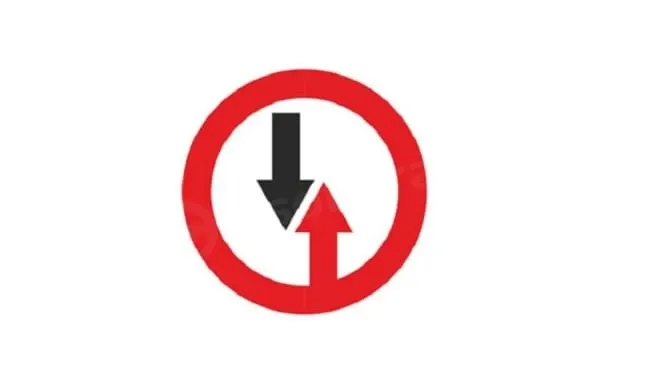
Bu belgi nimani bildiradi?
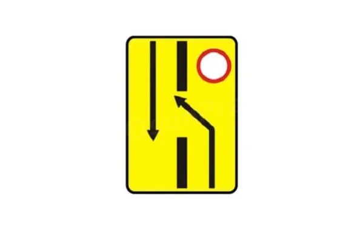
Bu belgi nimani bildiradi?
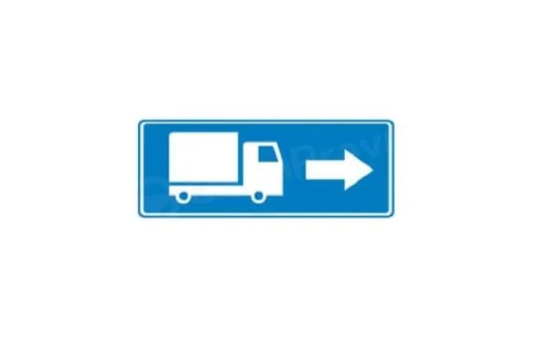
Bu belgi nimani bildiradi?
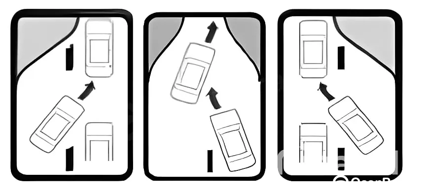
Bu belgi nimani bildiradi?
Javoblar jadvali (yodlash uchun)
| Savol | Savol matni (farqli so'zlar belgilangan) | To'g'ri javob |
|---|---|---|
| #102 | Bu belgi nimani bildiradi? | Haydovchi ro'paradan harakatlanayotgan transport vositasiga yo'l berishi kerak |
| #232 | Bu belgi nimani bildiradi? | Boshqa qatnov qismiga qayta tizilishning dastlabki ko'rsatkichi |
| #312 | Bu belgi nimani bildiradi? | Yuk avtomobillari, traktorlar, o'ziyurar mashinalar uchun, agar chorrahada ularning harakati yo'nalishlardan biriga taqiqlangan bo'lsa, tavsiya etiladigan harakat yo'nalishini |
| #1057 | Bu belgi nimani bildiradi? | Navbat bilan o'tishni |
M2, M3 toifali avtotransport vositalari shina protektorlari naqshlarining qoldiq balandligi kamida qancha bo'lishi kerak?
4 xil variant · saqlagan: #170, #309
M2, M3 toifali avtotransport vositalari shina protektorlari naqshlarining qoldiq balandligi kamida qancha bo'lishi kerak?
M1 toifadagi transport vositalari shinalari protektori naqshining qoldiq balandligi necha mm. dan kam bo'lmasligi kerak?
N2; N3; O3; O4 toifadagi transport vositalari shina protektori naqshlarining qoldiq balandligi qanchadan kam bo'lmasligi kerak?
M2; M3 toifadagi avtotransport vositalarining shina protektori naqshlarining balandligi quyidagilardan kam bo'lmasligi kerak:
Javoblar jadvali (yodlash uchun)
| Savol | Savol matni (farqli so'zlar belgilangan) | To'g'ri javob |
|---|---|---|
| #60 | M2, M3 toifali avtotransport vositalari shina protektorlari naqshlarining qoldiq balandligi kamida qancha bo'lishi kerak? | 2 mm. |
| #170 | M1 toifadagi transport vositalari shinalari protektori naqshining qoldiq balandligi necha mm. dan kam bo'lmasligi kerak? | 1,6 mm |
| #309 | N2; N3; O3; O4 toifadagi transport vositalari shina protektori naqshlarining qoldiq balandligi qanchadan kam bo'lmasligi kerak? | 1 mm |
| #600 | M2; M3 toifadagi avtotransport vositalarining shina protektori naqshlarining balandligi quyidagilardan kam bo'lmasligi kerak: | 2,0 mm |
Yuk avtomobilining yukxonasida qancha miqdorda odamlarni tashishga ruxsat beriladi?
3 xil variant · saqlagan: #290, #580
Yuk avtomobilining yukxonasida qancha miqdorda odamlarni tashishga ruxsat beriladi?
Odamlarni tashishga moslashtirilmagan yuk avtomobili yukxonasida odam tashishga ruxsat etiladimi?
Yuk avtomobilining yukxonasida 8 nafardan ko'p odamlarni tashish qaysi haydovchilarga ruxsat beriladi?
Javoblar jadvali (yodlash uchun)
| Savol | Savol matni (farqli so'zlar belgilangan) | To'g'ri javob |
|---|---|---|
| #200 | Yuk avtomobilining yukxonasida qancha miqdorda odamlarni tashishga ruxsat beriladi? | Tashilayotgan odamlar soni o'tirish uchun jihozlangan o'rinlar miqdoridan ortiq bo'lmasligi kerak |
| #290 | Odamlarni tashishga moslashtirilmagan yuk avtomobili yukxonasida odam tashishga ruxsat etiladimi? | Faqat yukni kuzatib boruvchi shaxslarga shu shart bilanki, ular bortlaridan pastda joylashgan o'tiradigan joy bilan ta'minlangan bo'lsalar ruxsat etiladi |
| #580 | Yuk avtomobilining yukxonasida 8 nafardan ko'p odamlarni tashish qaysi haydovchilarga ruxsat beriladi? | "D" va "С" toifadagi transport vositalarini boshqarish huquqiga ega bo'lgan va shu toifadagi transport vositalaridan birini 3 yildan ortiq boshqargan haydovchilarga |
Qaysi transport vositasi haydovchisi to'g'riga harakatlanish huquqiga ega?
5 xil variant · saqlagan: #15, #325
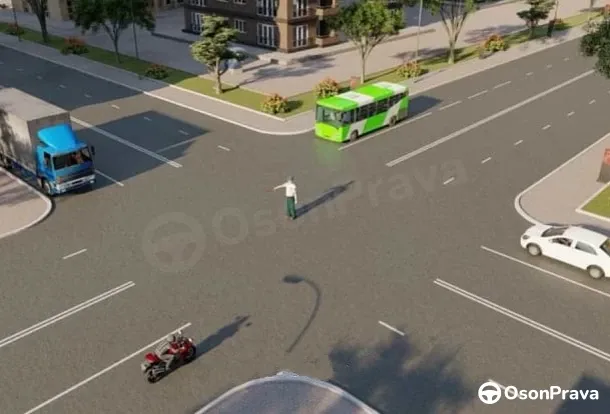
Qaysi transport vositasi haydovchisi to'g'riga harakatlanish huquqiga ega?
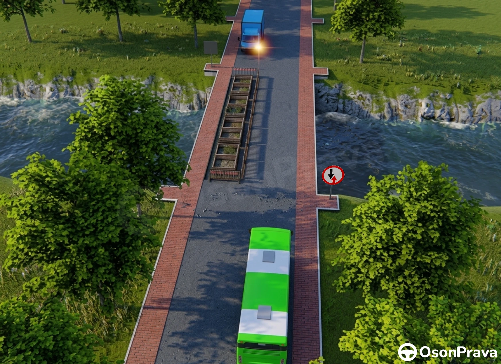
Qaysi transport vositasining haydovchisi birinchi navbatda harakatlanish huquqiga ega?
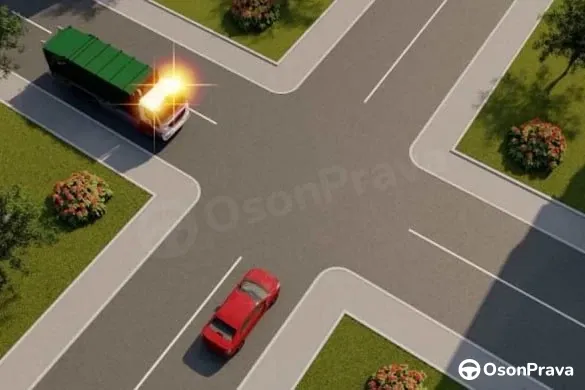
Qaysi transport vositasining haydovchisi birinchi navbatda harakatlanish ustunligiga ega?
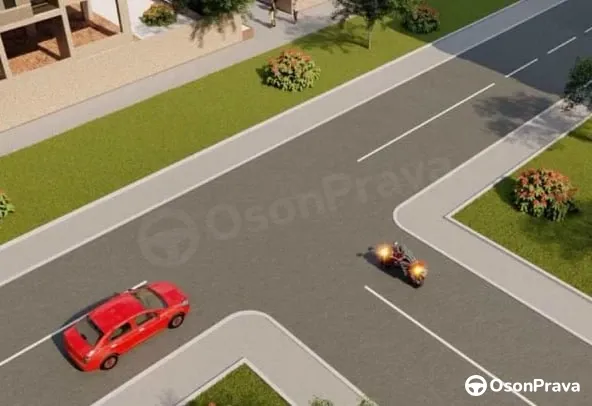
Qaysi transport vositasining haydovchisi birinchi navbatda harakatlanish huquqiga ega?
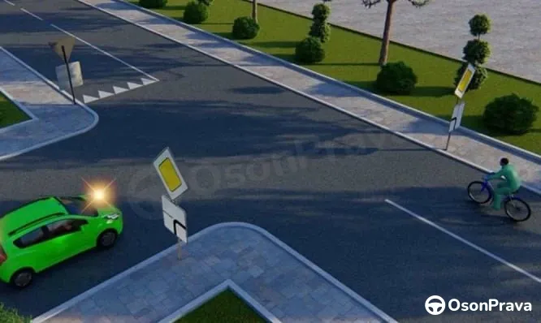
Qaysi transport vositasining haydovchisi birinchi bo'lib harakatlanish huquqiga ega?
Javoblar jadvali (yodlash uchun)
| Savol | Savol matni (farqli so'zlar belgilangan) | To'g'ri javob |
|---|---|---|
| #15 | Qaysi transport vositasi haydovchisi to'g'riga harakatlanish huquqiga ega? | Yengil avtomobil haydovchisi |
| #42 | Qaysi transport vositasining haydovchisi birinchi navbatda harakatlanish huquqiga ega? | Yuk avtomobili haydovchisi |
| #191 | Qaysi transport vositasining haydovchisi birinchi navbatda harakatlanish ustunligiga ega? | Yengil avtomobil haydovchisi |
| #325 | Qaysi transport vositasining haydovchisi birinchi navbatda harakatlanish huquqiga ega? | Motosikl haydovchisi |
| #384 | Qaysi transport vositasining haydovchisi birinchi bo'lib harakatlanish huquqiga ega? | Velosiped haydovchisi |
Belgi ostidagi qo'shimcha axborot belgisi nimani bildiradi?
2 xil variant · saqlagan: #182, #693
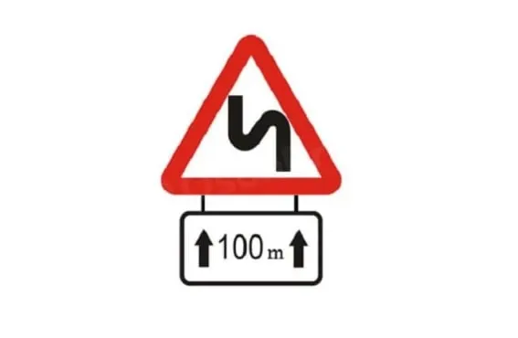
Belgi ostidagi qo'shimcha axborot belgisi nimani bildiradi?
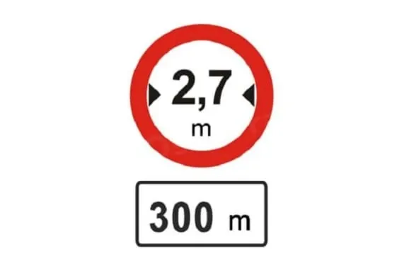
Belgi ostidagi qo'shimcha axborot belgisi nimani anglatadi?
Javoblar jadvali (yodlash uchun)
| Savol | Savol matni (farqli so'zlar belgilangan) | To'g'ri javob |
|---|---|---|
| #182 | Belgi ostidagi qo'shimcha axborot belgisi nimani bildiradi? | Yo'lning xavfli burilishlari bo'lgan qatnov qismi uzunligini |
| #693 | Belgi ostidagi qo'shimcha axborot belgisi nimani anglatadi? | Belgidan yo'lning tor qismigacha bo'lgan masofani |
N2; N3 toifadagi avtotransport vositalarining boshqaruv qurilmasida qanday eng katta umumiy lyuft yig'indisiga yo'l qo'yiladi?
5 xil variant · saqlagan: #918
N2; N3 toifadagi avtotransport vositalarining boshqaruv qurilmasida qanday eng katta umumiy lyuft yig'indisiga yo'l qo'yiladi?
M3 toifadagi avtotransport vositalarining boshqaruv qurilmasidagi qanday eng katta lyuft yig'indisiga yo'l qo'yiladi?
M3 toifadagi avtotransport vositalarining boshqaruv qurilmasidagi qanday eng katta lyuft yig'indisiga yo'l qo'yiladi?
M2 toifali avtotransport vositalarining boshqaruv qurilmasidagi qanday eng katta lyuft yig'indisiga yo'l qo'yiladi
N1 toifadagi avtotransport vositalarining boshqaruv qurilmasidagi qanday eng katta lyuft yig'indisiga yo'l qo'yiladi?
Javoblar jadvali (yodlash uchun)
| Savol | Savol matni (farqli so'zlar belgilangan) | To'g'ri javob |
|---|---|---|
| #120 | N2; N3 toifadagi avtotransport vositalarining boshqaruv qurilmasida qanday eng katta umumiy lyuft yig'indisiga yo'l qo'yiladi? | 25° |
| #733 | M3 toifadagi avtotransport vositalarining boshqaruv qurilmasidagi qanday eng katta lyuft yig'indisiga yo'l qo'yiladi? | 20° |
| #868 | M3 toifadagi avtotransport vositalarining boshqaruv qurilmasidagi qanday eng katta lyuft yig'indisiga yo'l qo'yiladi? | 20 gradus |
| #879 | M2 toifali avtotransport vositalarining boshqaruv qurilmasidagi qanday eng katta lyuft yig'indisiga yo'l qo'yiladi | 20 gradus |
| #918 | N1 toifadagi avtotransport vositalarining boshqaruv qurilmasidagi qanday eng katta lyuft yig'indisiga yo'l qo'yiladi? | 20 gradus |
Orqa tomondagi tumanga qarshi chiroqlar quyidagi hollarda qo'llanishi mumkin:
3 xil variant · saqlagan: #209
Orqa tomondagi tumanga qarshi chiroqlar quyidagi hollarda qo'llanishi mumkin:
Qoidalarning qanday hollarida tumanga qarshi orqa chiroqlarni qo'llashga ruxsat beriladi?
Tumanga qarshi chiroqlar va orqa tumanga qarshi chiroqlar birga yoqilishi mumkin?
Javoblar jadvali (yodlash uchun)
| Savol | Savol matni (farqli so'zlar belgilangan) | To'g'ri javob |
|---|---|---|
| #209 | Orqa tomondagi tumanga qarshi chiroqlar quyidagi hollarda qo'llanishi mumkin: | Faqat yetarli ko'rinmaydigan sharoitlarda |
| #666 | Qoidalarning qanday hollarida tumanga qarshi orqa chiroqlarni qo'llashga ruxsat beriladi? | Yetarlicha ko'rinmaydigan sharoitda qo'llash mumkin |
| #725 | Tumanga qarshi chiroqlar va orqa tumanga qarshi chiroqlar birga yoqilishi mumkin? | Yetarlicha ko'rinmaslik sharoitida |
N2; N3; O3; O4; M2; M3 toifadagi avtotransport vositalarining orqa devoriga yozilishi kerak?
2 xil variant · saqlagan: #650
N2; N3; O3; O4; M2; M3 toifadagi avtotransport vositalarining orqa devoriga yozilishi kerak?
M toifadagi avtotransport vositalari bu:
Javoblar jadvali (yodlash uchun)
| Savol | Savol matni (farqli so'zlar belgilangan) | To'g'ri javob |
|---|---|---|
| #650 | N2; N3; O3; O4; M2; M3 toifadagi avtotransport vositalarining orqa devoriga yozilishi kerak? | Yaxshi ko'rinadigan raqam belgisi |
| #956 | M toifadagi avtotransport vositalari bu: | Kamida to'rt g'ildirakka ega bo'lgan va yo'lovchilarni tashish uchun foydalaniladigan mexanik transport vositalari |
Svetoforning yashil miltillovchi ishorasi nimani bildiradi?
3 xil variant · saqlagan: #910
Svetoforning yashil miltillovchi ishorasi nimani bildiradi?
Svetoforning miltillovchi sariq ishorasi nima haqida ogohlantiradi?
Miltillovchi sariq ishorali svetofor:
Javoblar jadvali (yodlash uchun)
| Savol | Savol matni (farqli so'zlar belgilangan) | To'g'ri javob |
|---|---|---|
| #701 | Svetoforning yashil miltillovchi ishorasi nimani bildiradi? | Harakatga ruxsat beradi va tez orada taqiqlovchi ishora yonishi to'g'risida axborot beradi |
| #829 | Svetoforning miltillovchi sariq ishorasi nima haqida ogohlantiradi? | Barcha javoblar to'g'ri |
| #910 | Miltillovchi sariq ishorali svetofor: | Tartibga solinmagan chorraha yoki piyodalar o'tish joyi borligidan xabardor qiladi |
108 km/s tezlikda harakatlanayotgan transport vositasi 1 sekundda qancha masofani bosib o'tadi?
3 xil variant · saqlagan: #731
108 km/s tezlikda harakatlanayotgan transport vositasi 1 sekundda qancha masofani bosib o'tadi?
72 km/soat tezlikda harakatlanayotgan transport vositasi 1 sekundda qancha masofani bosib o'tadi?
90 km/soat tezlikda harakatlanayotgan transport vositasi 1 sekundda qancha masofani bosib o'tadi?
Javoblar jadvali (yodlash uchun)
| Savol | Savol matni (farqli so'zlar belgilangan) | To'g'ri javob |
|---|---|---|
| #731 | 108 km/s tezlikda harakatlanayotgan transport vositasi 1 sekundda qancha masofani bosib o'tadi? | 30 m |
| #739 | 72 km/soat tezlikda harakatlanayotgan transport vositasi 1 sekundda qancha masofani bosib o'tadi? | 20 m |
| #774 | 90 km/soat tezlikda harakatlanayotgan transport vositasi 1 sekundda qancha masofani bosib o'tadi? | 25 m |
Agar avtomobilning o'ng g'ildiraklari nam qoplamali yo'l yoqasiga chiqib qolsa, tavsiya etiladi?
3 xil variant · saqlagan: #923
Agar avtomobilning o'ng g'ildiraklari nam qoplamali yo'l yoqasiga chiqib qolsa, tavsiya etiladi?
Agar avtomobilning o'ng g'ildiraklari nam qoplamali yo'l yoqasiga chiqib qolsa, tavsiya etiladi:
Agar avtomobilning o'ng g'ildiraklari nam qoplamali yo'l yoqasiga chiqib qolsa, tavsiya etiladi:
Javoblar jadvali (yodlash uchun)
| Savol | Savol matni (farqli so'zlar belgilangan) | To'g'ri javob |
|---|---|---|
| #878 | Agar avtomobilning o'ng g'ildiraklari nam qoplamali yo'l yoqasiga chiqib qolsa, tavsiya etiladi? | Avtomobilni tormozlamasdan yo'lning qatnov qismiga ohista ravon burish |
| #891 | Agar avtomobilning o'ng g'ildiraklari nam qoplamali yo'l yoqasiga chiqib qolsa, tavsiya etiladi: | Avtomobilni tormozlamasdan yo'lning harakat qismiga ohista ravon burish |
| #923 | Agar avtomobilning o'ng g'ildiraklari nam qoplamali yo'l yoqasiga chiqib qolsa, tavsiya etiladi: | Avtomobilni tormozlamasdan yo'lning harakat qismiga oxista ravon burish |
Qaysi transport vositasiga harakatlanish ruxsat etiladi?
9 xil variant · saqlagan: #75
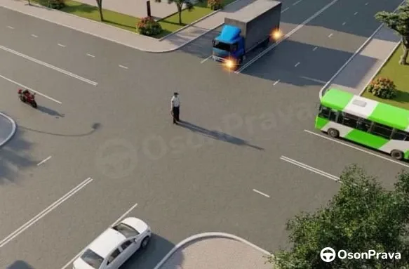
Qaysi transport vositasiga harakatlanish ruxsat etiladi?
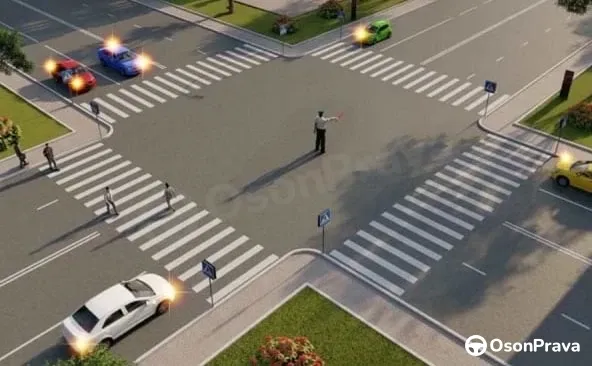
Qaysi transport vositalariga harakatlanishga ruxsat etiladi?
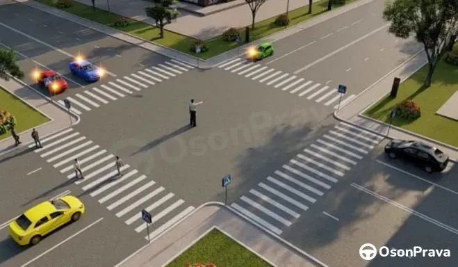
Qaysi transport vositalariga harakatlanish ruxsat etiladi?
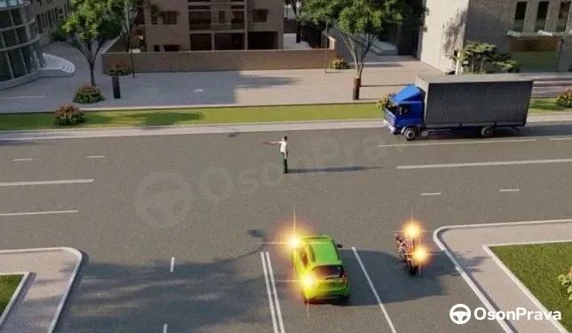
Qaysi transport vositalariga harakatlanish uchun ruxsat berilgan?
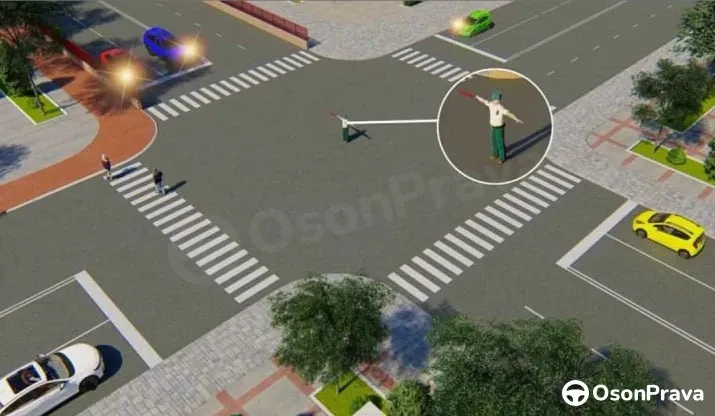
Qaysi transport vositasiga harakatlanish ruxsat etiladi?
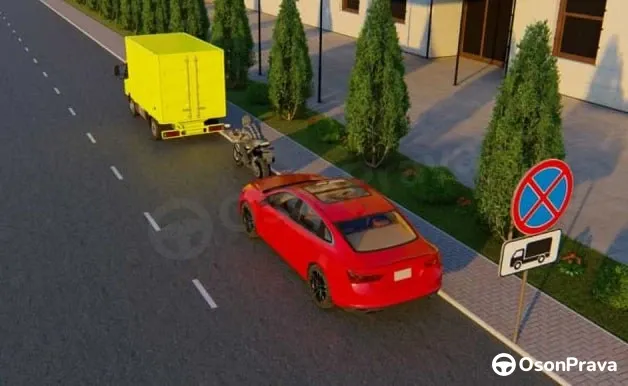
Qaysi transport vositasiga to'xtash taqiqlangan?
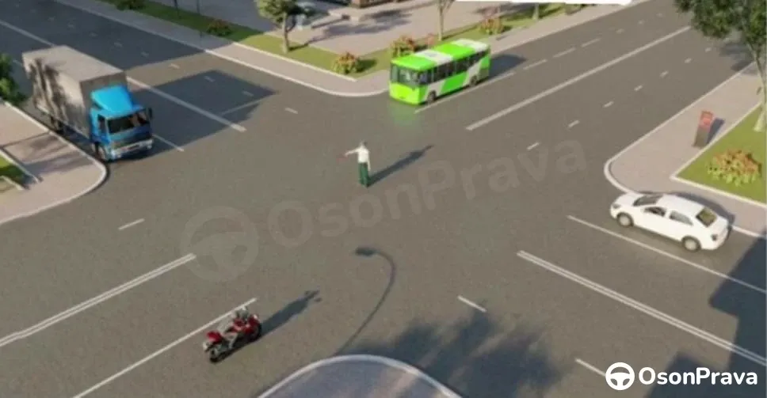
Qaysi transport vositalariga harakatlanishga ruxsat berilgan?
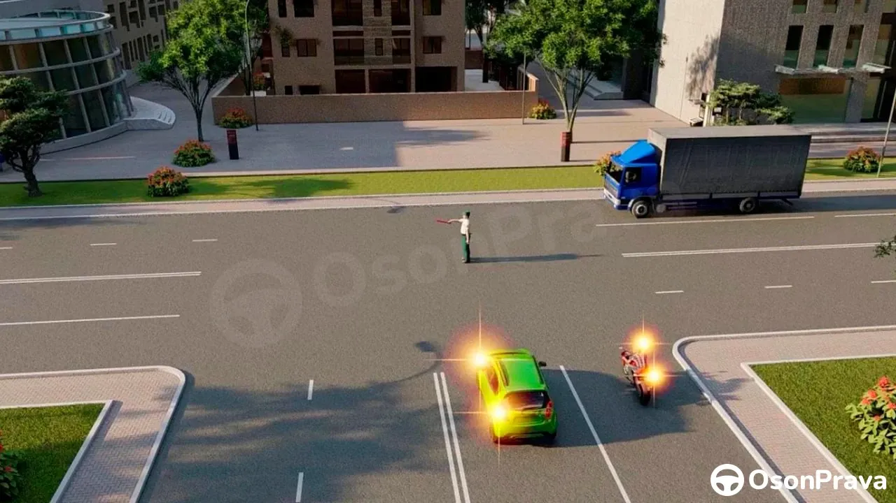
Qaysi transport vositasiga harakatlanish taqiqlangan?
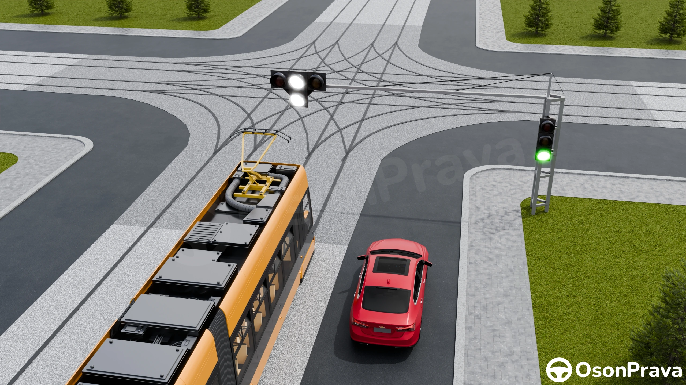
Qaysi transport vositalari o'ngga harakatlanishga ruxsat etiladi?
Javoblar jadvali (yodlash uchun)
| Savol | Savol matni (farqli so'zlar belgilangan) | To'g'ri javob |
|---|---|---|
| #35 | Qaysi transport vositasiga harakatlanish ruxsat etiladi? | Yengil avtomobilga |
| #56 | Qaysi transport vositalariga harakatlanishga ruxsat etiladi? | Qizil, ko'k va yashil avtomobillarga. |
| #75 | Qaysi transport vositalariga harakatlanish ruxsat etiladi? | Yashil, ko'k va qizil |
| #132 | Qaysi transport vositalariga harakatlanish uchun ruxsat berilgan? | Yengil avtomobilga va motosiklga |
| #505 | Qaysi transport vositasiga harakatlanish ruxsat etiladi? | Sariq va qizil avtomobilga |
| #682 | Qaysi transport vositasiga to'xtash taqiqlangan? | Yuk avtomobili haydovchisi |
| #916 | Qaysi transport vositalariga harakatlanishga ruxsat berilgan? | Motosiklga o'ngga, yengil avtomobilga to'g'riga va o'ngga |
| #940 | Qaysi transport vositasiga harakatlanish taqiqlangan? | Yuk avtomobiliga |
| #1152 | Qaysi transport vositalari o'ngga harakatlanishga ruxsat etiladi? | Yengil avtomobilga |
Ushbu svetofor qaysi harakatlanishni tartibga solish uchun qo'llanadi?
2 xil variant · saqlagan: #84
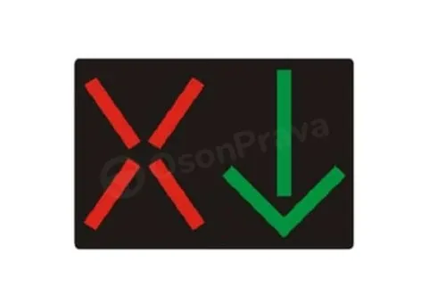
Ushbu svetofor qaysi harakatlanishni tartibga solish uchun qo'llanadi?
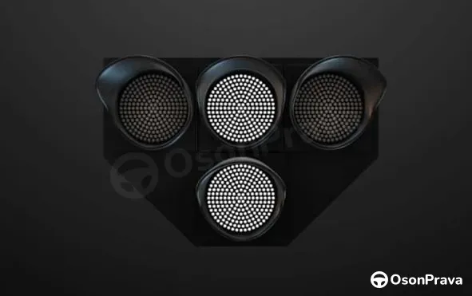
Mazkur svetofor harakatlanishni tartibga solish uchun qo'llaniladi:
Javoblar jadvali (yodlash uchun)
| Savol | Savol matni (farqli so'zlar belgilangan) | To'g'ri javob |
|---|---|---|
| #84 | Ushbu svetofor qaysi harakatlanishni tartibga solish uchun qo'llanadi? | Qatnov qismidagi harakatlanish yo'nalishi qarama-qarshi tomonga o'zgaradigan tasmalar bo'yicha |
| #665 | Mazkur svetofor harakatlanishni tartibga solish uchun qo'llaniladi: | Tramvaylarga, shuningdek alohida tasmadan yuradigan belgilangan yo'nalishdagi boshqa transport vositalarini harakatini tartibga soladi |
Harakatlanishga ruxsat berilgan:
2 xil variant · saqlagan: #144
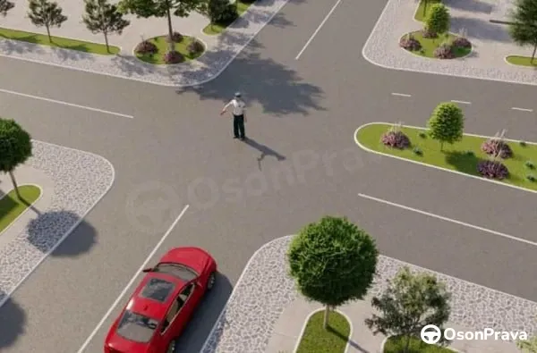
Harakatlanishga ruxsat berilgan:
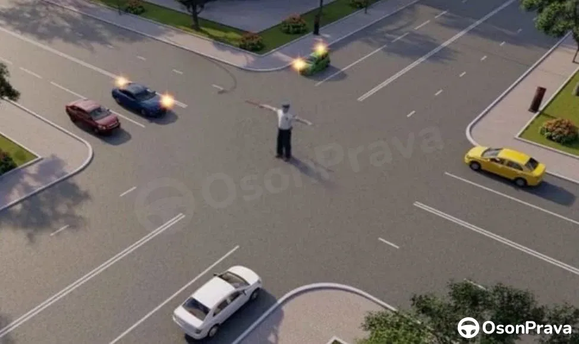
Harakatlanishga ruxsat berilgan:
Javoblar jadvali (yodlash uchun)
| Savol | Savol matni (farqli so'zlar belgilangan) | To'g'ri javob |
|---|---|---|
| #144 | Harakatlanishga ruxsat berilgan: | O'ngga birinchi yo'lga |
| #804 | Harakatlanishga ruxsat berilgan: | Qizil va sariq avtomobilga |
Bu yo'l belgisi:
2 xil variant · saqlagan: #547
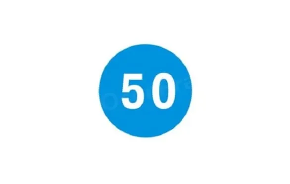
Bu yo'l belgisi:
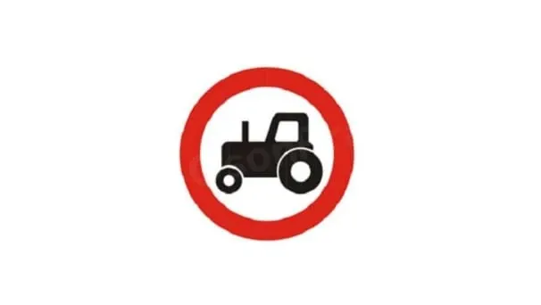
Bu yo'l belgisi:
Javoblar jadvali (yodlash uchun)
| Savol | Savol matni (farqli so'zlar belgilangan) | To'g'ri javob |
|---|---|---|
| #214 | Bu yo'l belgisi: | Faqat belgida ko'rsatilgan yoki yuqori tezlikda harakatlanishga ruxsat beradi |
| #547 | Bu yo'l belgisi: | Traktorlar va o'zi yurar mashinalarning harakatlanishi taqiqlanadi |
Yengil avtomobil haydovchisi yo'l berishi kerakmi?
5 xil variant · saqlagan: #1154
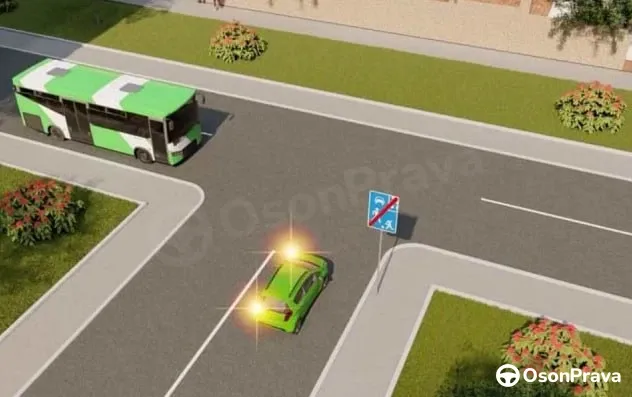
Yengil avtomobil haydovchisi yo'l berishi kerakmi?
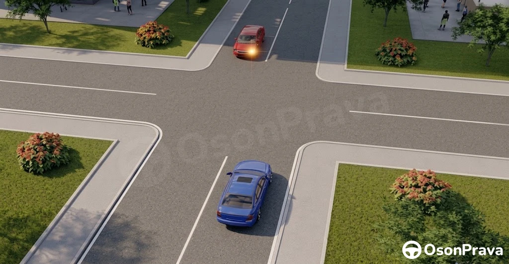
Chorrahada qaysi avtomobil yo'l berishi kerak?
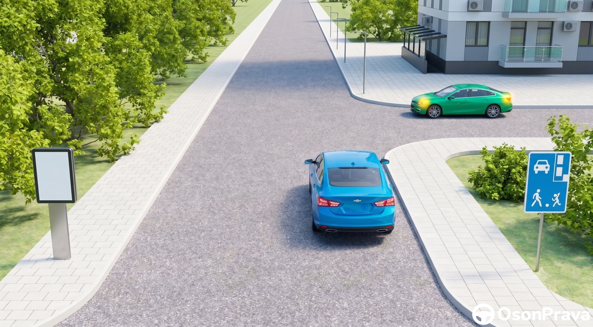
Qaysi avtomobil haydovchisi yo'l berishi kerak?
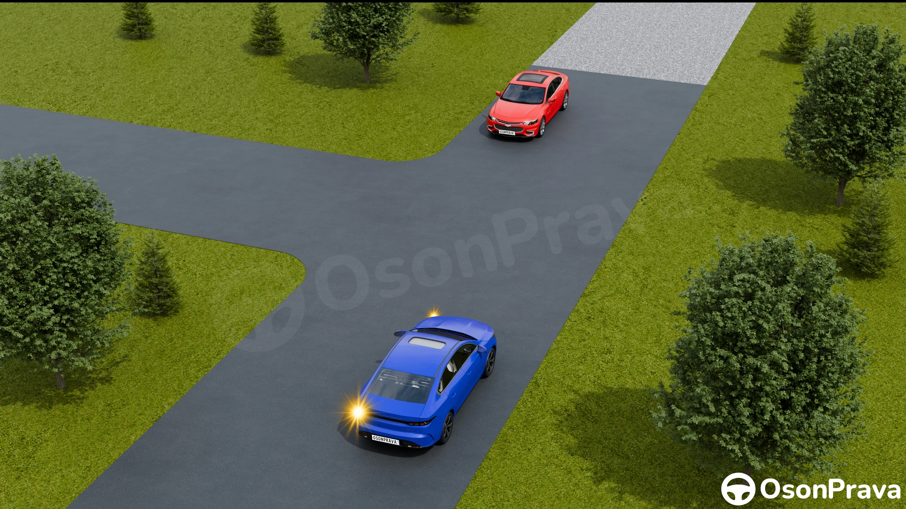
Qaysi avtomobil haydovchisi yo‘l berishi kerak?
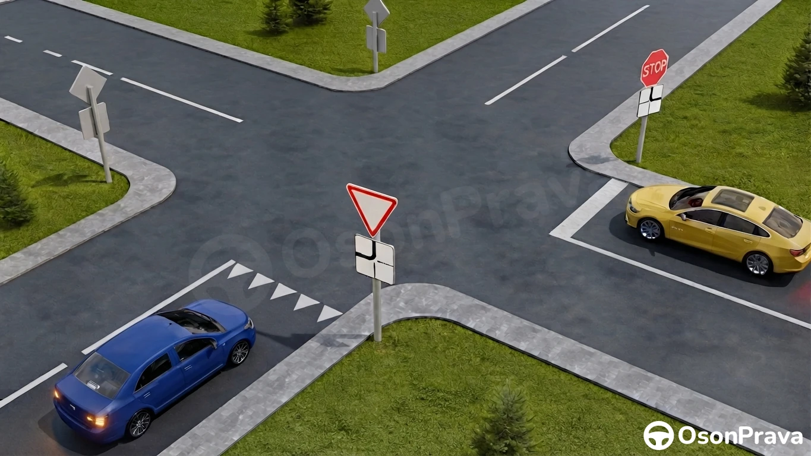
Qaysi avtomobil haydovchisi yo'l berishi kerak?
Javoblar jadvali (yodlash uchun)
| Savol | Savol matni (farqli so'zlar belgilangan) | To'g'ri javob |
|---|---|---|
| #289 | Yengil avtomobil haydovchisi yo'l berishi kerakmi? | Ha |
| #852 | Chorrahada qaysi avtomobil yo'l berishi kerak? | Qizil avtomobil |
| #1078 | Qaysi avtomobil haydovchisi yo'l berishi kerak? | Ko'k avtomobil haydovchisi |
| #1154 | Qaysi avtomobil haydovchisi yo‘l berishi kerak? | Qizil avtomobil |
| #1211 | Qaysi avtomobil haydovchisi yo'l berishi kerak? | Ko'k |
Bu yo'l chizig'i nimani bildiradi?
2 xil variant · saqlagan: #463
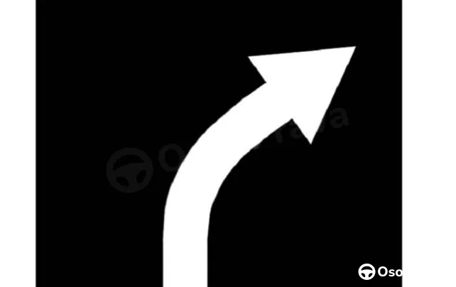
Bu yo'l chizig'i nimani bildiradi?
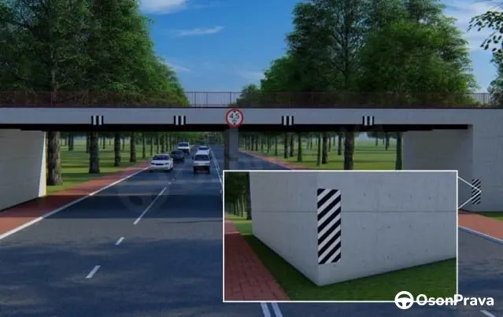
Bu yo'l chizig'i nimani bildiradi?
Javoblar jadvali (yodlash uchun)
| Savol | Savol matni (farqli so'zlar belgilangan) | To'g'ri javob |
|---|---|---|
| #293 | Bu yo'l chizig'i nimani bildiradi? | Qatnov qismining torayishiga yoki qarama-qarshi yo'nalishdan kelayotgan transport oqimini ajratuvchi 1,1 yoki 1,11 chizig'iga yaqinlashayotganini |
| #463 | Bu yo'l chizig'i nimani bildiradi? | Yo'l inshootlarining harakatdagi transport vositalariga xavf tug'diradigan tik tasmalarini |
Bu yotiq chiziq nimani bildiradi?
3 xil variant · saqlagan: #363
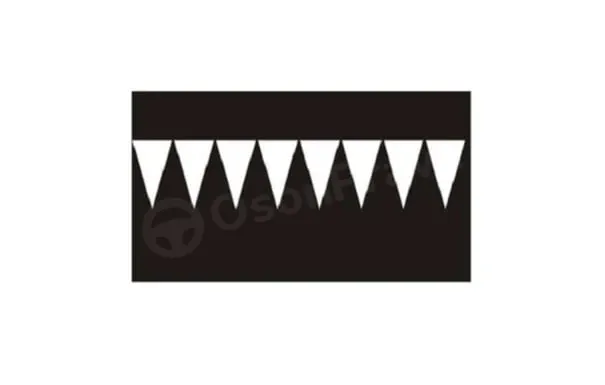
Bu yotiq chiziq nimani bildiradi?
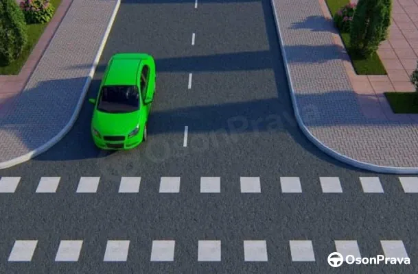
Bu yotiq chiziq nimani bildiradi?
Bu yotiq chiziq nimani bildiradi?
Javoblar jadvali (yodlash uchun)
| Savol | Savol matni (farqli so'zlar belgilangan) | To'g'ri javob |
|---|---|---|
| #363 | Bu yotiq chiziq nimani bildiradi? | Kesib o'tiladigan yo'l bo'ylab harakatlanayotgan transport vositasiga yo'l berar ekan, haydovchi zarur holda qayerda to'xtashi kerak bo'lgan joyni |
| #433 | Bu yotiq chiziq nimani bildiradi? | Velosiped yo'lkasi qatnov qismini kesib o'tadigan joyni |
| #453 | Bu yotiq chiziq nimani bildiradi? | Faqat belgilangan yo'nalishdagi transport vositalarining harakatlanishi uchun mo'ljallangan tasmani bildiradi |
Bu yotiq chiziq bildiradi:
2 xil variant · saqlagan: #373
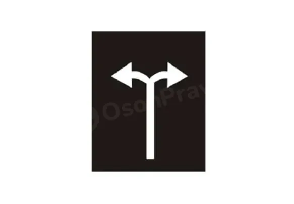
Bu yotiq chiziq bildiradi:
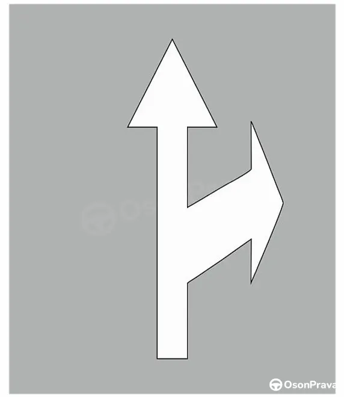
Bu yotiq chiziq bildiradi:
Javoblar jadvali (yodlash uchun)
| Savol | Savol matni (farqli so'zlar belgilangan) | To'g'ri javob |
|---|---|---|
| #373 | Bu yotiq chiziq bildiradi: | Chorrahada tasmalar bo'ylab ruxsat etilgan harakat yo'nalishlarini ko'rsatadi |
| #1017 | Bu yotiq chiziq bildiradi: | Chorrahalarda tasmalar bo'yicha ruxsat etilgan harakat yo'nalishlarni ko'rsatadi |
Rasmda ko'rsatilgan holatda qizil avtomobilning haydovchisi qanday yo'l tutishi kerak?
2 xil variant · saqlagan: #388
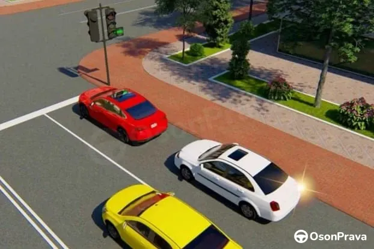
Rasmda ko'rsatilgan holatda qizil avtomobilning haydovchisi qanday yo'l tutishi kerak?
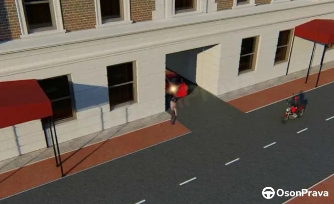
Ko'rsatilgan vaziyatda yengil avtomobilning haydovchisi qanday yo'l tutishi kerak?
Javoblar jadvali (yodlash uchun)
| Savol | Savol matni (farqli so'zlar belgilangan) | To'g'ri javob |
|---|---|---|
| #375 | Rasmda ko'rsatilgan holatda qizil avtomobilning haydovchisi qanday yo'l tutishi kerak? | O'ngga burilish ishorasini yoqishi va o'ngga burilishi |
| #388 | Ko'rsatilgan vaziyatda yengil avtomobilning haydovchisi qanday yo'l tutishi kerak? | Hovlidan chiqishda piyodani va transport vositalarini o'tkazib yuborishi |
Svetoforning bu ishorasida qaysi transport vositasining harakatlanishiga ruxsat etilgan?
3 xil variant · saqlagan: #385
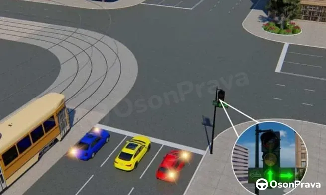
Svetoforning bu ishorasida qaysi transport vositasining harakatlanishiga ruxsat etilgan?
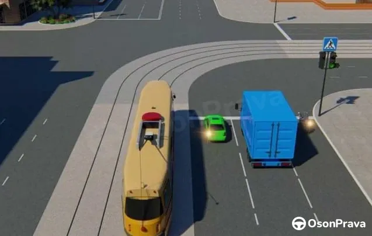
Svetoforning ushbu ishorasida qaysi transport vositalariga harakatlanishga ruxsat etilgan?
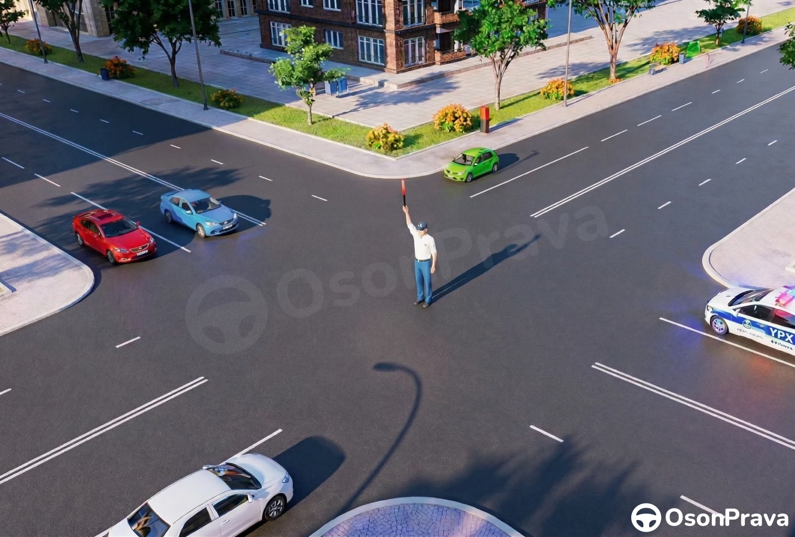
Tartibga soluvchining ushbu ishorasida qaysi transport vositalariga harakatlanishga ruxsat etiladi?
Javoblar jadvali (yodlash uchun)
| Savol | Savol matni (farqli so'zlar belgilangan) | To'g'ri javob |
|---|---|---|
| #385 | Svetoforning bu ishorasida qaysi transport vositasining harakatlanishiga ruxsat etilgan? | Sariq va qizil avtomobillarga |
| #585 | Svetoforning ushbu ishorasida qaysi transport vositalariga harakatlanishga ruxsat etilgan? | Yengil va yuk avtomobillariga |
| #1213 | Tartibga soluvchining ushbu ishorasida qaysi transport vositalariga harakatlanishga ruxsat etiladi? | Hech biriga ruxsat etilmaydi |
Transport vositalari ushbu taniqli belgilari bilan belgilanadi:
2 xil variant · saqlagan: #400
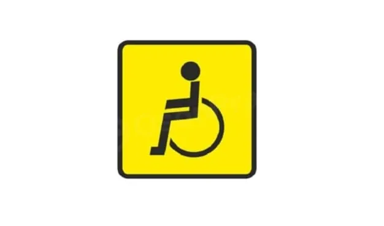
Transport vositalari ushbu taniqli belgilari bilan belgilanadi:
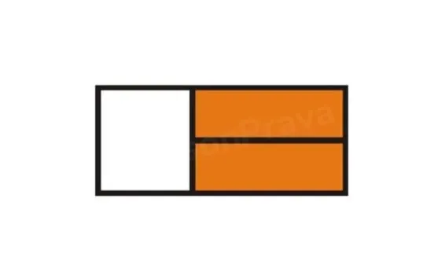
Transport vositasi ushbu taniqli belgisi bilan belgilanadi:
Javoblar jadvali (yodlash uchun)
| Savol | Savol matni (farqli so'zlar belgilangan) | To'g'ri javob |
|---|---|---|
| #390 | Transport vositalari ushbu taniqli belgilari bilan belgilanadi: | Nogiron boshqarayotgan |
| #400 | Transport vositasi ushbu taniqli belgisi bilan belgilanadi: | Xavfli yuklar tashiyotgan |
Yo'naltirgichlar bilan ko'rsatilgan qaysi yo'nalishlarda harakatlanishga ruxsat etilgan?
3 xil variant · saqlagan: #452
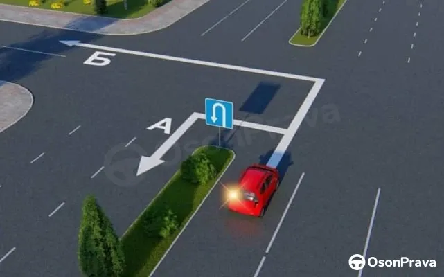
Yo'naltirgichlar bilan ko'rsatilgan qaysi yo'nalishlarda harakatlanishga ruxsat etilgan?
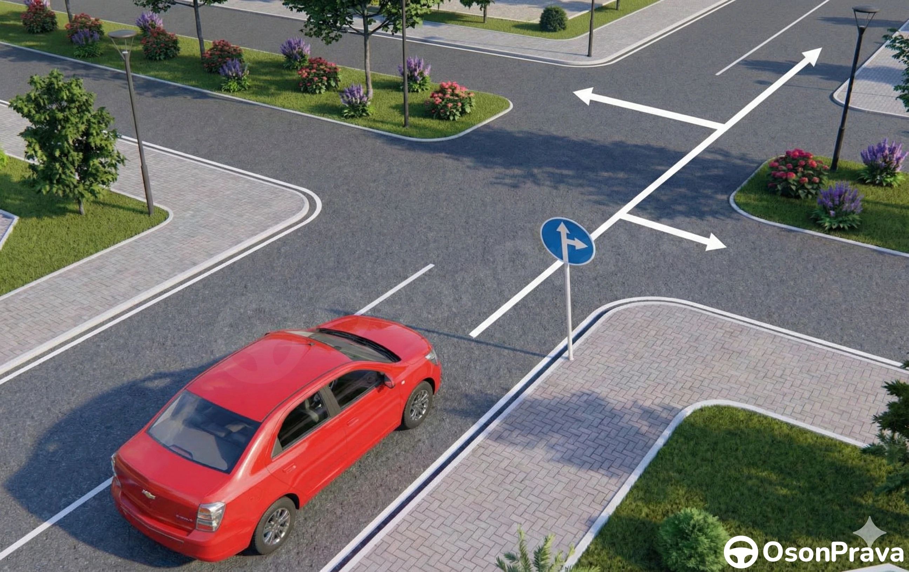
Yo'naltirgichlar bilan ko'rsatilgan qaysi yo'nalishlarda harakatlanish ruxsat etilgan?
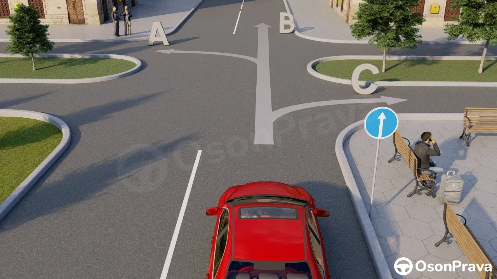
Yo‘naltirgichlar bilan ko‘rsatilgan qaysi yo‘nalishlarda harakat ruxsat etilgan?
Javoblar jadvali (yodlash uchun)
| Savol | Savol matni (farqli so'zlar belgilangan) | To'g'ri javob |
|---|---|---|
| #452 | Yo'naltirgichlar bilan ko'rsatilgan qaysi yo'nalishlarda harakatlanishga ruxsat etilgan? | "А" |
| #1072 | Yo'naltirgichlar bilan ko'rsatilgan qaysi yo'nalishlarda harakatlanish ruxsat etilgan? | Barcha yo'nalishlarga |
| #1118 | Yo‘naltirgichlar bilan ko‘rsatilgan qaysi yo‘nalishlarda harakat ruxsat etilgan? | Faqat to‘g‘riga va chapga |
Ko'rsatilgan belgilardan qaysi biri avtomagistrallarga o'rnatiladi?
2 xil variant · saqlagan: #487
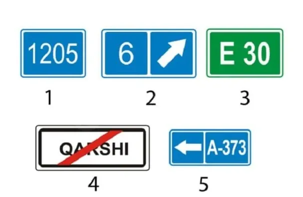
Ko'rsatilgan belgilardan qaysi biri avtomagistrallarga o'rnatiladi?
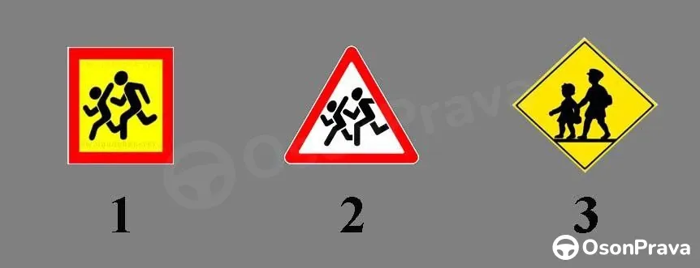
Ko'rsatilgan belgilardan qaysi biri bolalar deb nomlanadi?
Javoblar jadvali (yodlash uchun)
| Savol | Savol matni (farqli so'zlar belgilangan) | To'g'ri javob |
|---|---|---|
| #487 | Ko'rsatilgan belgilardan qaysi biri avtomagistrallarga o'rnatiladi? | 3 |
| #1049 | Ko'rsatilgan belgilardan qaysi biri bolalar deb nomlanadi? | 2 |
Ko'rsatilgan yo'l belgisi qaysi transport vositalariga harakatlanishni taqiqlaydi?
2 xil variant · saqlagan: #683
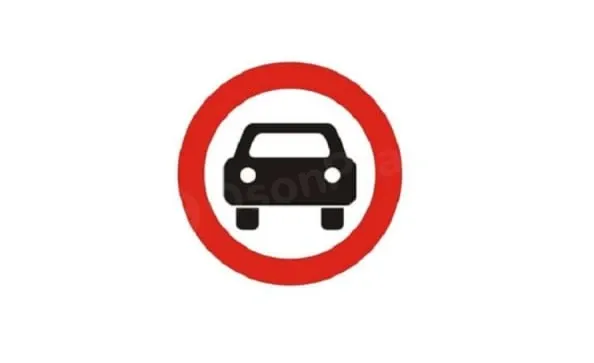
Ko'rsatilgan yo'l belgisi qaysi transport vositalariga harakatlanishni taqiqlaydi?
Ushbu yo'l belgisi qaysi transport vositalarining harakatlanishini taqiqlaydi?
Javoblar jadvali (yodlash uchun)
| Savol | Savol matni (farqli so'zlar belgilangan) | To'g'ri javob |
|---|---|---|
| #683 | Ko'rsatilgan yo'l belgisi qaysi transport vositalariga harakatlanishni taqiqlaydi? | Barcha mexanik transport vositalariga |
| #906 | Ushbu yo'l belgisi qaysi transport vositalarining harakatlanishini taqiqlaydi? | Xavfli yuk tashiyotgan transport vositalarining harakatlanishini |
Qaysi transport vositasining haydovchisi qoidani buzib burilmoqda?
2 xil variant · saqlagan: #751
Qaysi transport vositasining haydovchisi qoidani buzib burilmoqda?
Qaysi transport vositasi haydovchisi qoida buzib harakatlanmoqda?
Javoblar jadvali (yodlash uchun)
| Savol | Savol matni (farqli so'zlar belgilangan) | To'g'ri javob |
|---|---|---|
| #751 | Qaysi transport vositasining haydovchisi qoidani buzib burilmoqda? | Ikkisi ham buzmoqda |
| #1038 | Qaysi transport vositasi haydovchisi qoida buzib harakatlanmoqda? | Ruxsat etilgan to'la vazni 3 tonna bo'lgan yuk avtomobili va moped haydovchisi |
Siz chapga burilmoqchisiz, kimga yo‘l berishingiz kerak?
2 xil variant · saqlagan: #1110
Siz chapga burilmoqchisiz, kimga yo‘l berishingiz kerak?
Siz chorrahadan chapga burilmoqchisiz, kimga yo‘l berishingiz kerak?
Javoblar jadvali (yodlash uchun)
| Savol | Savol matni (farqli so'zlar belgilangan) | To'g'ri javob |
|---|---|---|
| #778 | Siz chapga burilmoqchisiz, kimga yo‘l berishingiz kerak? | Har ikki transport vositasiga |
| #1110 | Siz chorrahadan chapga burilmoqchisiz, kimga yo‘l berishingiz kerak? | Traktorga |
Qaysi rasmda ikkita qatnov qismiga ega yo'l ko'rsatilgan?
2 xil variant · saqlagan: #914
Qaysi rasmda ikkita qatnov qismiga ega yo'l ko'rsatilgan?
Qaysi rasmda ikkita qatnov qismiga ega bo'lgan yo'l ko'rsatilgan?
Javoblar jadvali (yodlash uchun)
| Savol | Savol matni (farqli so'zlar belgilangan) | To'g'ri javob |
|---|---|---|
| #808 | Qaysi rasmda ikkita qatnov qismiga ega yo'l ko'rsatilgan? | Ikkinchisida |
| #914 | Qaysi rasmda ikkita qatnov qismiga ega bo'lgan yo'l ko'rsatilgan? | Hech qaysi rasmda |
Ushbu qo'shimcha axborot yo'l belgisi bildiradi:
2 xil variant · saqlagan: #925
Ushbu qo'shimcha axborot yo'l belgisi bildiradi:
Ushbu qo'shimcha axborot yo'l belgisi bildiradi:
Javoblar jadvali (yodlash uchun)
| Savol | Savol matni (farqli so'zlar belgilangan) | To'g'ri javob |
|---|---|---|
| #882 | Ushbu qo'shimcha axborot yo'l belgisi bildiradi: | Barcha turdagi transport vositalarining to'xtab turish uchun yo'lning qatnov qismida, trotuar yoniga qo'yish usulini |
| #925 | Ushbu qo'shimcha axborot yo'l belgisi bildiradi: | Belgi ta'siri oralig'ida to'xtagan transport vositalari majburiy evakuasiya qilinishini ko'rsatadi |
Rasmda ko'rsatilgan chorraha- ...
2 xil variant · saqlagan: #927
Rasmda ko'rsatilgan chorraha- ...
Rasmda ko'rsatilgan chorraha- ...
Javoblar jadvali (yodlash uchun)
| Savol | Savol matni (farqli so'zlar belgilangan) | To'g'ri javob |
|---|---|---|
| #927 | Rasmda ko'rsatilgan chorraha- ... | Tartibga solinmagan, teng ahamiyatga ega bo'lmagan yo'llar kesishgan chorraha |
| #958 | Rasmda ko'rsatilgan chorraha- ... | Tartibga solingan chorraha |
Ushbu belgi qanday nomlanadi?
3 xil variant · saqlagan: #1075
Ushbu belgi qanday nomlanadi?
Ushbu belgi qanday nomlanadi?
Ushbu belgi qanday nomlanadi?
Javoblar jadvali (yodlash uchun)
| Savol | Savol matni (farqli so'zlar belgilangan) | To'g'ri javob |
|---|---|---|
| #1075 | Ushbu belgi qanday nomlanadi? | Baland piyodalar o'tish joyi |
| #1092 | Ushbu belgi qanday nomlanadi? | Pullik to'xtab turish joyi |
| #1116 | Ushbu belgi qanday nomlanadi? | Individual harakatlanish vositalarini boshqarish taqiqlangan |